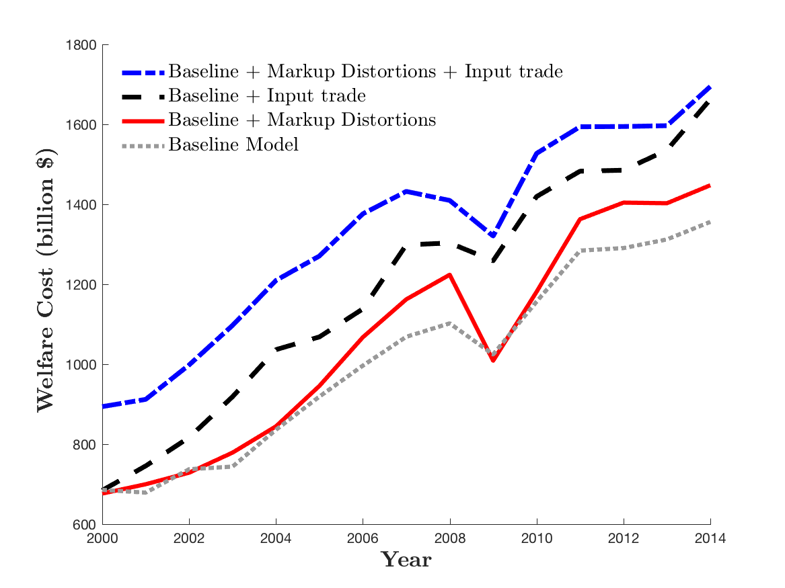
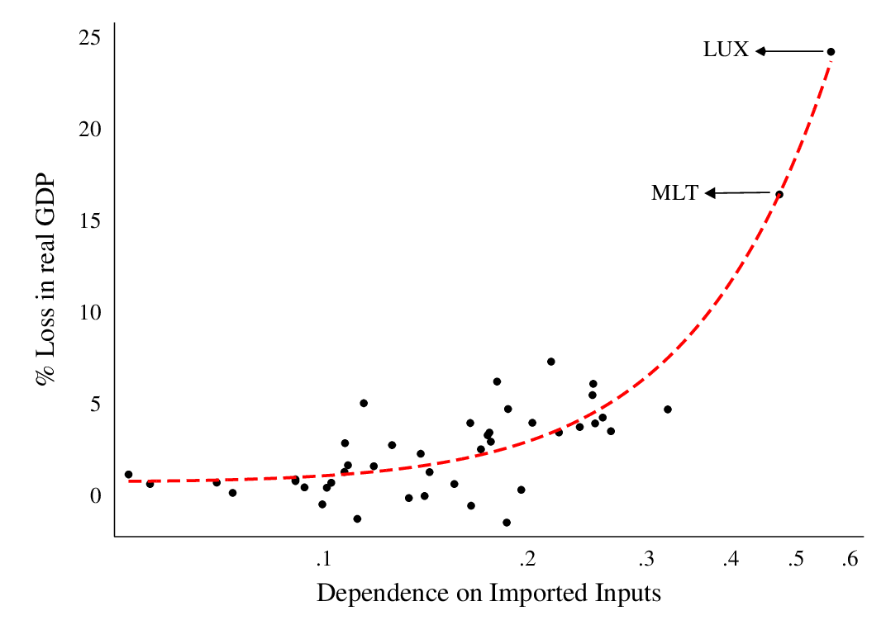
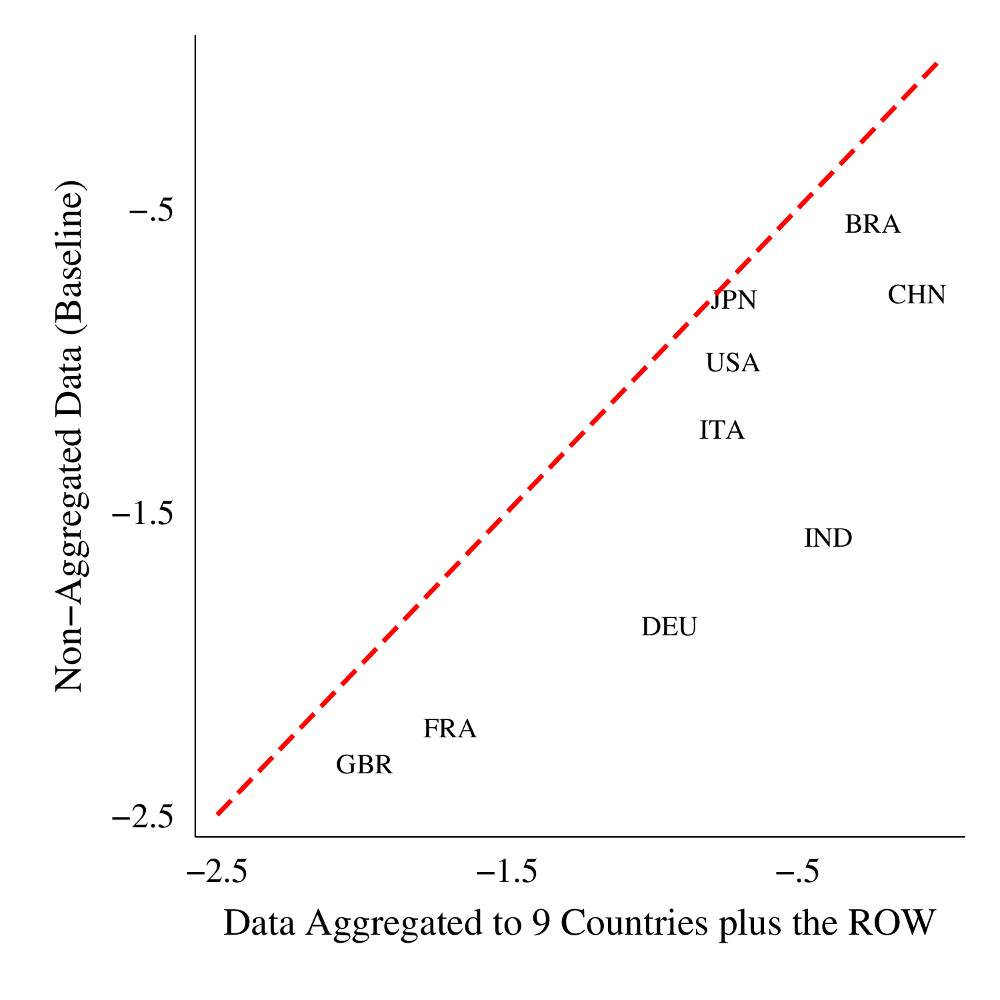
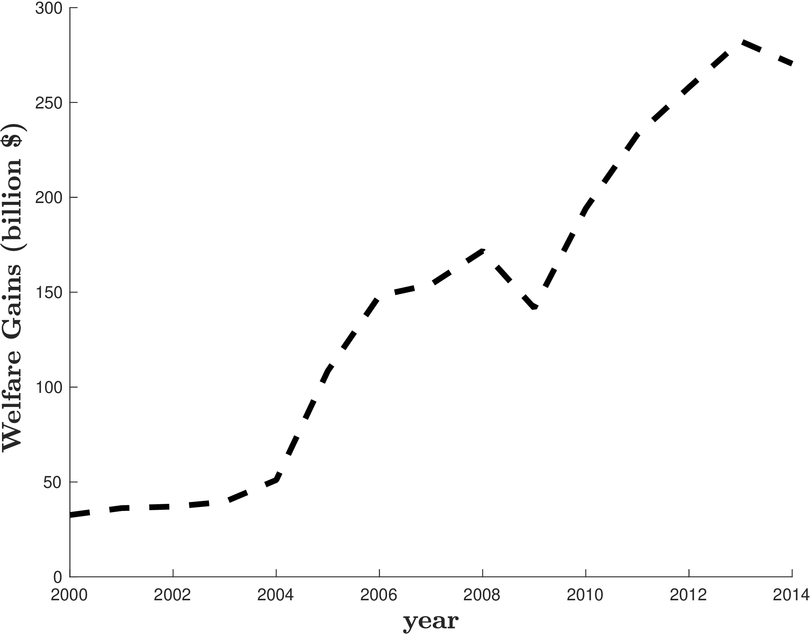
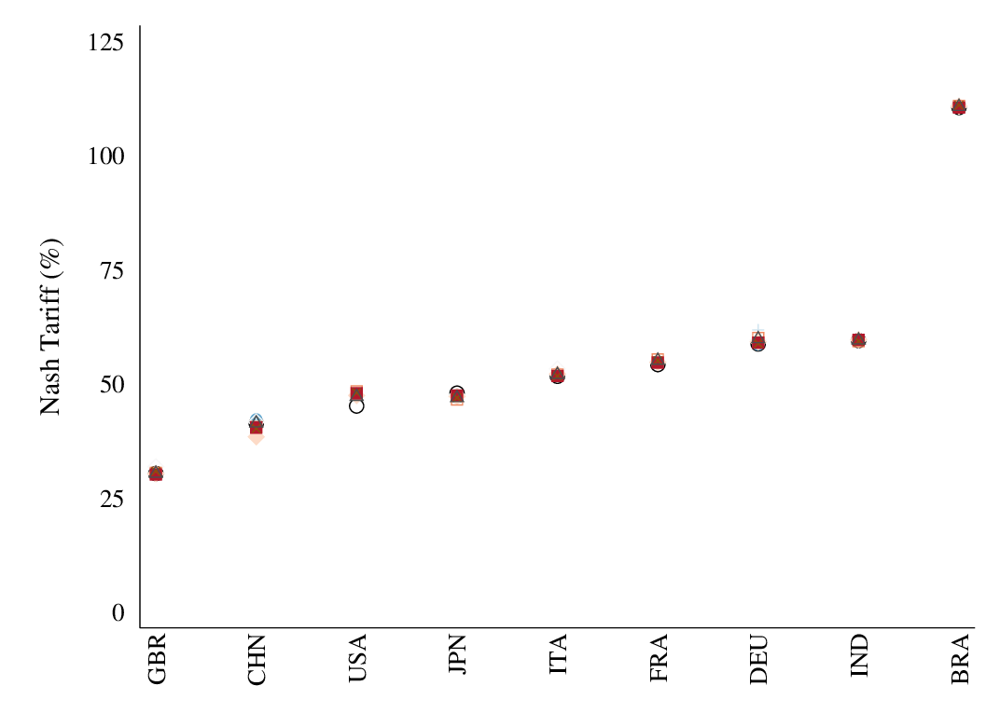
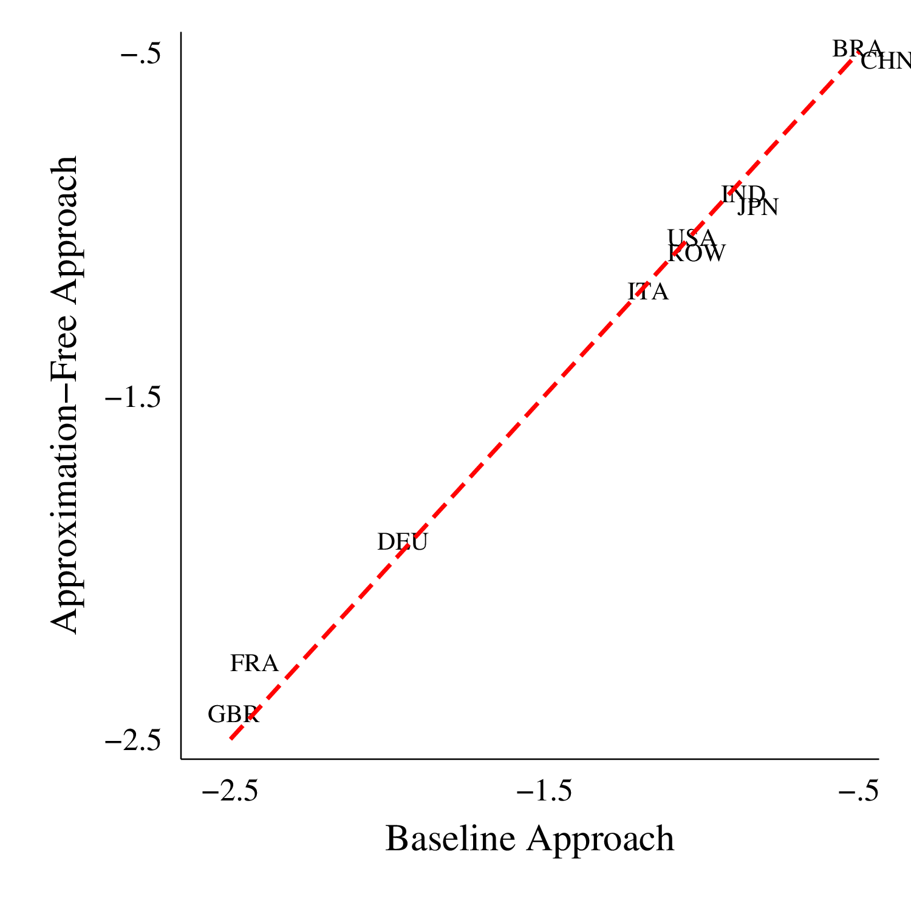

The Cost of a Global Tariff War: A Sufficient Statistics Approach
Ahmad Lashkaripour (Indiana University, CESifo, CEPR)
Journal of International Economics · July 2021
Read PDF · Markdown source · Reader view · Online appendix · Dashboard · Replication files
Abstract. Tariff wars have reemerged as a serious threat to the global economy. Yet measuring the prospective cost of a global tariff war remains computationally prohibitive, unless we restrict attention to a small set of countries and industries. This paper develops a new methodology that measures the cost of a global tariff war in one simple step as a function of observable shares, industry-level trade elasticities, and markup wedges. Applying this methodology to data on 44 countries and 56 industries, I find that (i) the prospective cost of a global tariff war has more-than-doubled over the past fifteen years, with small downstream economies being the most vulnerable. (ii) Meanwhile, due to the rise of global markup distortions, the potential gains from cooperative tariff policies have also elevated to unprecedented levels.
1 Introduction
The global economy is entering a new era of tariffs, with many economic leaders warning against the eminent threat of a global tariff war. Just recently, Christine Lagarde, head of the International Monetary Fund, labeled the escalating US-China tariff war as “the biggest risk to global economic growth.”Source:https://www.bloomberg.com/news/articles/2019-06-09/lagarde-says-u-s-china-trade-war-looms-large-over-global-growth
Concurrent with these real-world developments, there has been a growing academic interest in measuring the cost of tariff wars. One natural approach is the “ex-post” approach adopted by Amiti et al. (2019) and Fajgelbaum et al. (2019). This approach, uses data on observed tariff hikes; employs economic theory to estimate the passthrough of tariffs onto consumer prices; and measures the welfare cost of these already-applied tariffs.
The evidence put forward by the “ex-post” approach is revealing, but it does not speak to an outstanding policy question: what is the prospective cost of a full-fledged global tariff war? To answer such “what if” questions, we first need to determine the non-cooperative Nash tariff levels that will prevail under a global tariff war. The “ex-ante” approach undertaken by Perroni and Whalley (2000) and Ossa (2014) accomplishes this exact task.See Balistreri and Hillberry (2018) for a recent application of the ex-ante approach to the current US-China tariff war. They use economic theory to estimate the Nash tariff levels that will prevail and the welfare cost that will result from a hypothetical (but now imminent) global tariff war.
The “ex-ante” approach has been quite influential and recent methodological advances by Ossa (2014) have made it more accessible to researchers. Yet existing techniques are plagued with the curse of dimensionality when applied to many countries and industries. The current state-of-the-art technique computes the Nash tariffs using an iterative process where each iteration performs a country-by-country numerical optimization based on the output of the previous iterations.See Ossa (2016) for a comprehensive review of the iterative global optimization technique. Advances that have made this technique more efficient include \((i)\) reformulating the problem using the exact hat-algebra technique; \((ii)\) parallelizing the country-by-country optimizations; and \((iii)\) providing analytical derivatives for the optimization algorithm. As the number of countries or industries grows, the computational burden underlying this approach can raise exponentially. This is perhaps why the current implementations of the “ex-ante” approach are limited to a small set of countries and abstract from salient but complex features of the global economy like input trade.
In this paper, I develop a simple sufficient statistics methodology to measure the prospective cost of a global tariff war.The sufficient statistics methodology developed here is akin to the Arkolakis et al. (2012) methodology, and exhibits key differences with the sufficient statistics approach popularized by Chetty (2009) in the public finance literature. See Chapter 7 in Costinot and Rodríguez-Clare (2014) for more discussion on these differences. My optimization-free methodology circumvents some of the main computational challenges facing existing “ex-ante” techniques. This feature allows me to uncovers the cost of a global tariff war across many years and countries, including a long list of previously-neglected small, emerging economies. I find that the cost of a global tariff war has risen dramatically over the past two decades, with small downstream economies being –by far– the most vulnerable.
The new methodology relies on the analytical characterization of Nash tariffs in a state-of-the-art quantitative trade model featuring multiple industries, markup distortions, intermediate input trade, and political economy pressures. Nash tariffs correspond to tariff levels that will prevail in the event of a global tariff war. Prior characterizations of Nash tariffs are impractical for my analysis, as they are limited to partial equilibrium or single industry-two country models.See e.g., Johnson (1953), Gros (1987), and Felbermayr et al. (2013) for a prior characterization of Nash tariffs in two-country and single industry setups. I, therefore, derive new analytic formulas for Nash tariffs that are compatible with my general equilibrium, multi-country and multi-industry analysis.My characterization of Nash tariffs shares similarities with Beshkar and Lashkaripour (2019) and Lashkaripour and Lugovskyy (2020). The aforementioned studies analyze unilaterally optimal trade taxes in two-country general equilibrium trade models. This paper analyzes many non-cooperative countries that strategically impose tariffs against each other. These formulas are especially advantageous as they describe Nash tariffs as a function of observable shares and structural parameters.
Using my analytic tariff formulas and the exact hat-algebra methodology, popularized by Dekle et al. (2007), I can compute the Nash tariffs and their welfare effects in one simple (optimization-free) step. Moreover, this entire procedure can be performed with information on only \((i)\) observable shares, \((ii)\) industry-level trade elasticities, and \((iii)\) constant industry-level markup wedges. The same logic can be employed to compute the gains from cooperative tariffs.Specifically, I first derive an analytic formula for cooperative tariffs. I then calibrate these formulas to data using the exact hat-algebra technique. This procedure can be carried with knowledge of only observable shares, trade elasticities, and markup wedges. These are internationally coordinated tariffs that correct global markup distortions, and are notoriously difficult to compute (Ossa (2016)).
The new methodology is remarkably fast: It computes the cost of a global tariff war and the gains from future trade talks in a matter of seconds. In comparison, optimization-based techniques may take hours or even days, depending on the number of countries and industries being analyzed. This improvement in speed is partly due to bypassing the need for iterative numerical optimization. But it is also due to a reduction in dimensionality, since analytic formulas indicate that Nash tariffs are uniform along certain dimensions.
I apply the new methodology to the World Input-Output Database (WIOD, Timmer et al. (2012)) from 2000 to 2014, covering 43 major countries and 56 industries. For each country in the sample, I compute the prospective cost of a global tariff war in each year during the 2000-2014 period. I first perform my analysis using a baseline multi-industry Eaton and Kortum (2002) model. I subsequently introduce markup distortions, political pressures, and input trade into the baseline model to determine how these additional factors contribute to the cost of a tariff war. May analysis delivers four basic insights:
- i.
- A global tariff war can shrink the average country’s real GDP by 2.8%. This figure is aggravated by the increased dependence of countries on intermediate input trade and the exacerbation of pre-existing markup distortions. To give some perspective, the expected cost of a global tariff war was $1.7 trillion in 2014, when added up across all countries. Such a cost is the equivalent of erasing South Korea from the global economy.
- ii.
- The prospective cost of a global tariff war has more-than-doubled from 2000 to 2014. The rising cost is driven by two distinct forces. First, the rise of global markup distortions, which prompts countries to impose more-targeted (i.e., more-distortionary) Nash tariffs in the event of a tariff war. Second, the increasing dependence of emerging economies on intermediate input trade since 2000.
- iii.
- Small downstream economies are the main casualties of a global tariff war. Take Estonia, for example, where imported inputs account for 30% of the national output inclusive of services. Due to its strong dependence on imported inputs, 10% of Estonia’s real GDP will be wiped out by a global tariff war. Similar losses will be incurred by other small, downstream economies like Bulgaria, Latvia, and Luxembourg.
- iv.
- Due to the global rise of markup distortions, the gains from cooperative tariffs have also multiplied from 2000 to 2014. Stated otherwise, the unexplored gains from deeper trade negotiations have risen on par with the prospective cost of a global trade war. To present some numbers, cooperative tariffs could have added up to $347 billion to global GDP in 2014, up from a mere $184 billion in 2000.
Aside from the already-discussed methodological contribution, this paper makes three conceptual contributions to the literature. First, my analytic formulas for Nash tariffs highlight a previously overlooked contributor to the cost of tariff wars. I show that Nash tariffs (in all countries) are targeted at high-markup industries. As a result, they shrink global output in high-markup industries below their already sub-optimal level. These developments exacerbate pre-existing market distortions and inflict an efficiency loss that is distinct from the standard trade-loss emphasized in the prior literature (e.g., Gros (1987)).
Second, this paper sheds new light on the winners and losers of global tariff wars. Since Johnson (1953), an immense body of literature has emphasized that country size dictates the winners (Kennan and Riezman (2013)). My analysis shows that a country’s dependence on imported input is an equally-determining factor. For instance, Norway that is a net exporter in upstream industries (due its commodity exports) can gain from a global tariff war despite being small. These gains obviously come at the expense of small downstream economies incurring significant losses. These findings, though, assume that governments apply tariffs-subject-to-duty-drawbacks, which are input-output blind by design. Beshkar and Lashkaripour (2020) look beyond this simple case and present a more comprehensive view of how global value chains amplify the cost of a global trade war.
Third, my approach highlights the pitfalls of data aggregation, which is common-place in the tariff war literature. To elaborate, existing analyses of tariff wars often restrict attention to a small set of countries and aggregate the “rest of the world” into one taxing authority. Such aggregation schemes allow researchers to handle the computational complexities inherent to tariff war analysis. Capitalizing on the computational efficiency of my sufficient statistics approach, I can measure the cost of a tariff war with and without such aggregation schemes. Comparing the outcomes indicates that standard aggregation schemes overstate the loss from a tariff war quite considerably. Simply, because they artificially assign significant market power to “the rest of the world.”
Finally, at a broader level, the approach developed here can be viewed as a sufficient statistics methodology to quantify the gains from trade agreements. In that regard, it contributes to Arkolakis et al. (2012), Costinot and Rodríguez-Clare (2014), and Arkolakis et al. (2015) who propose sufficient statistics methodologies that quantify the gains from trade relative to autarky in an important class of trade models. Like the aforementioned studies, my proposed methodology quantifies the gains from trade, but it does so relative to a world without trade agreements as opposed to autarky.
This paper is organized as follows. Section 2 presents the theoretical model, based on which a sufficient statistics approach is developed to measure the cost of a global tariff war in Section 3. Section 4 extends the methodology to compute cooperative tariffs. Section 5 presents a quantitative implementation of the methodology. Section 6 concludes.
2 Theoretical Framework
The present methodology applies to a wide range of quantitative trade models. In the interest of exposition, I begin my analysis with a baseline multi-industry, multi-country Ricardian model that nests the Eaton and Kortum (2002) and Armington models as a special case. I subsequently extend the baseline model to account for \((a)\) political economy pressures and profit-shifting effects à la Ossa (2014), and \((b)\) intermediate input trade under duty drawbacks.
Throughout my analysis, I consider a global economy consisting of \(i=1,...,N\) countries and \(k=1,..,K\) industries, with \(\mathbb {C}\) and \(\mathbb {K}\) respectively denoting the set of countries and industries. Labor is the only primary factor of production. Each country \(i\) is populated with \(\bar {L}_{i}\) workers, each of whom supplies one unit of labor inelastically. Workers are perfectly mobile across industries but immobile across countries.
2.1 Demand
In the baseline Ricardian model, all varieties in industry \(k\) are differentiated by country of origin, with the triplet \(ji,k\) denoting a variety corresponding to origin \(j\)–destination \(i\)–industry \(k\). Under the Eaton and Kortum (2002) interpretation of the model, national product differentiation of this kind can be attributed to Ricardian specialization within industries. The representative consumer in Country \(i\) maximizes a general utility function, which yields an indirect utility function as follows
In the above problem, \(Y_{i}\) denotes total income; \(\mathbf{Q}_{i}=\{Q_{ji,k}\}\) denotes the vector of composite consumption quantities, \(\tilde {\mathbf{P}}_{i}=\{\tilde {P}_{ji,k}\}\) denotes the corresponding vector of “consumer” price indexes, and “\(\cdot\) ” is the inner product operator (i.e., \(\mathbf{a}\cdot \mathbf{b}=\sum _{i}a_{i}b_{i}\)). To avoid any confusion, I emphasize that tilde on the price variable is used to distinguish between (after-tax) consumer and (pre-tax) producer prices. The representative consumer’s problem yields a Marshallian demand function,
which describes optimal consumption in country \(i\) as function of income, \(Y_{i}\), and consumer prices, \(\tilde {\mathbf{P}}_{i}\). When analyzing optimal tariff policy in each country, several demand-side variables play a key role. First, expenditure shares which represent the importance of each good in the consumption basket. Second, demand elasticities, which summarize the demand function specified under Equation 1. Below, I formally define these set of variables.
Definition 1.[Expenditure Shares] The share of country \(i\)’s expenditure on industry \(k\) goods is denoted by \(e_{i,k}\), and the within-industry share of expenditure on variety \(ji,k\) (origin \(j\)–destination \(i\)–industry \(k\)) is denoted by \(\lambda _{ji,k}\):
Building on the above definitions, the unconditional expenditure share on variety \(ji,k\) (\(e_{ji,k}\)) and the overall share of expenditure on goods from origin \(j\) (\(\lambda _{ji}\)) is defined as
Note the distinction between \(e_{ji,k}\), and \(\lambda _{ji,k}\). The former concerns the share of variety \(ji,k\) in total expenditure. The latter concerns the share of expenditure on variety \(ji,k\) conditional on buying industry \(k\) goods. As we will shortly, \(\lambda _{ji,k}\) governs the Marshallian demand elasticities under CES preferences. These elasticities are defined as follows for the general (not-necessarily CES) case.
Definition 2.[Demand Elasticities] The elasticity of demand for good \(ji,k\) with respect to the price of good \(ni,g\) is denoted by
I assume that consumer preferences are well-behaved in that \(\varepsilon _{ji,k}^{(ji,k)}<-1\).The income elasticity of demand plays a less prominent role in my analysis, so I relegate its definition to the appendix. We can appeal to two properties of the Marshallian demand function, namely, \((i)\) Cournot aggregation, and \((ii)\) homogeneity of degree zero, to prove that the elasticity matrixes, \(\mathbf{E}_{ji}\), and \(\tilde {\mathbf{E}}_{ji}\) are invertible.
Lemma 1.The matrixes \(\mathbf{E}_{ji}\sim \mathbf{E}_{ji}^{(ji)}\) and \(\mathbf{\tilde {\mathbf{E}}}_{ji}\sim \mathbf{\tilde {\mathbf{E}}}_{ji}^{(ji)}\) are non-singular.
The above lemma is formally proven in Appendix A. As we will see shortly, the ability to invert the elasticity matrixes is essential for deriving sufficient statistics formulas for optimal tariffs in each country.
2.2 Production
In the baseline Ricardian model, labor is the sole factor of production and the unit labor cost of production and transportation is invariant to policy. Correspondingly, the “producer” price of composite variety \(ji,k\) can be expressed as a function of the labor wage rate in country \(j\), \(w_{j}\), multiplied by the constant unit labor cost of production, \(\bar {a}_{j,k}\), and the iceberg trade cost, \(\bar {\tau }_{ji,k}\) (with \(\bar {\tau }_{ii,k}=1\)):
The bar notation indicates that \(\bar {a}_{j,k}\) and \(\bar {\tau }_{ji,k}\) are invariant to policy. The “consumer” price, by definition, equals the “producer” price times the tariff applied by country \(i\) on variety \(ji,k\), namely, \(t_{ji,k}\):
The invariance of \(\bar {a}_{j,k}\) to policy change derives from constant returns to scale technologies. It amounts to a flat export supply curve, which entails that the passthrough of taxes on to consumer prices is complete after we net out general equilibrium wage effects. This assumption is consistent with ex-post studies of the recent US-China tariff war, like Amiti et al. (2019) and Fajgelbaum et al. (2019).
2.3 General Equilibrium
Given the vector of tariffs in each country \(i\), \(\mathbf{t}_{i}=\{t_{ji,k}\}\), equilibrium consists of a vector of wages, \(\mathbf{w}=\{w_{j}\}\), a vector of “producer” and “consumer” price indexes, \(\mathbf{P}_{i}=\{P_{ji,k}\}\) and \(\tilde {\mathbf{P}}_{i}=\{\tilde {P}_{ji,k}\}\) (as described by Equations 3 and 4), and consumption quantities, \(\mathbf{Q}_{i}\), given by the Marshallian demand function 1, such that wage income in each country equals sales net of taxes,The above equation along with the representative consumer’s budget constraint, ensure that trade is balanced between countries
and total income equals the wage bill plus tariff revenue:
For the reader’s convenience, Table 1 reports a summary of the key variables and parameters of the model.
Social Welfare. Provided that equilibrium is unique, all equilibrium variables can be uniquely characterized as a function of global tariff rates, \(\mathbf{t}\), and wages, \(\mathbf{w}\), with the latter implicitly depending on tariffs, i.e., \(\mathbf{w}=\boldsymbol {w}(\mathbf{t})\)—see Appendix A for details. Social welfare in Country \(i\) can, accordingly, be expressed as follows given the indirect utility function:
Treating tariffs in the rest of world as given (i.e., \(\mathbf{t}_{-i}=\bar {\mathbf{t}}_{-i}\)), country \(i\)’s marginal welfare gain from imposing \(t_{ji,k}\) can be calculated as
The first term in the above equation accounts for the direct effect of tariffs on consumer prices and tariff revenues, holding \(\mathbf{w}\) fixed. The second term accounts for the welfare effects that are mediated through general equilibrium wage adjustments. \(\text{d}\ln \mathbf{w}/\text{d}\ln (1+t_{ji,k})\) can be calculated by applying the Implicit Function Theorem to the system of national labor market clearing conditions (Equation 5). Let \(r_{ni}\equiv \mathbf{P}_{ni}\cdot \mathbf{Q}_{ni}/w_{n}L_{n}\) denote the share of origin \(n\)’s wage revenue from sales to destination \(i\). It is straightforward to cross-check from actual trade data that \(r_{ni}/r_{ii}\approx 0\) if \(n\neq i\). Stated verbally, each individual foreign destination accounts for a negligible fraction of country \(i\)’s national income.In a sample of 44 major countries in 2014, the median country had an \(\text{avg}_{n\neq i}\left (r_{ni}/r_{ii}\right )=0.001\)—see Section 5 for a full description of the data behind this statistic. Also, \(r_{ni}/r_{ii}\approx 0\) is consistent with the complete passthrough estimated by Amiti et al. (2019) and Fajgelbaum et al. (2019), since the tariff passthrough (minus one) is proportional to \(r_{ni}\) for each exporter \(n\neq i\). This observation should come at little surprise since a substantial fraction of national output in each country is generated in the non-traded sector. Furthermore, the tradeable fraction of national output is sold to many foreign destinations. Based on this observation and assigning \(w_{j}\) as the numeraire, the change in country \(i\)’s welfare can be approximated as (see Appendix B):More specifically, wage effects in Equation 7 can be characterized as\[\frac {\partial W_{i}(\mathbf{t}_{i},\mathbf{t}_{-i};\mathbf{w})}{\partial \ln \mathbf{w}}\cdot \frac {\text{d}\ln \mathbf{w}}{\text{d}\ln (1+t_{ji,k})}=\frac {\partial W_{i}(.)}{\partial \ln w_{i}}\frac {\text{d}\ln w_{i}}{\text{d}\ln (1+t_{ji,k})}\left (1+\frac {\Psi _{i}}{\bar {\Psi }_{-i}}\frac {\bar {r}_{-ii}}{r_{ii}}\right )\] where \(\Psi _{i}\equiv \sum _{k}\left [1+r_{ii,k}\epsilon _{k}(1-\lambda _{ii,k})\right ]\), \(\overline {\Psi }_{-i}^{-1}\equiv \frac {\sum _{n\neq i}\left [\lambda _{ni}r_{ni}\Psi _{n}^{-1}\right ]}{\sum _{n\neq i}\lambda _{ni}r_{ni}}\) and \(\bar {r}_{-ii}=\text{avg}_{n\neq i}\left (r_{ni}\right )=\frac {\sum _{n\neq i}\left (\lambda _{ni}r_{ni}\right )}{\sum _{n\neq i}\lambda _{ni}}\). It is immediate from actual trade data that \(\bar {r}_{-ii}/r_{ii}\approx 0\), yielding Equation 8.
The above approximation posits that \(t_{ji,k}\) can affect \(W_{i}\) by raising \(w_{i}\) relative to wages in the rest of world, \(\mathbf{w}_{-i}\). But treating \(w_{j}\) as the numeraire, the welfare effects of \(t_{ji,k}\) that occur through a change in \(w_{n}/w_{j}\) are zero to a first-order approximation iff \(n\neq i\) and \(j\). To be clear, the above approximation is strictly weaker than the small open economy assumption. It also does not rule out general equilibrium wage effect altogether, which is a common limitation of the classic trade policy literature (Maggi (2014)).
In what follows, I use the above approximation to derive sufficient statistics formulas for Nash tariffs. Appendix D derives sufficient statistics formulas for Nash tariffs without the above approximation. Computing Nash tariffs using the approximation-free formulas will be computationally more involved, but the computed tariff levels will be indistinguishable from the baseline levels.
| Variable | Description |
| \(\tilde {P}_{ji,k}\) | Consumer price index of variety \(ji,k\) (origin \(j\)–destination \(i\)–industry \(k\)) |
| \(P_{ji,k}\) | Producer price index of variety \(ji,k\) (origin \(j\)–destination \(i\)–industry \(k\)) |
| \(Q_{ji,k}\) | Consumption quantity/Output of variety \(ji,k\) |
| \(\chi _{ji,k}\) | Share of variety \(ji,k\) in origin \(j\)’s total exports (\(j\neq i\)) |
| \(Y_{i}\) | Total income in country \(i\) |
| \(w_{i}\bar {L}_{i}\) | Wage income in country \(i\) (wage\(\times\) population size) |
| \(t_{ji,k}^{*}\) | Nash/Optimal tariff imposed by country \(i\) on variety \(ji,k\) |
| \(\bar {t}_{ji,k}\) | Applied (status-quo) tariff on variety \(ji,k\) |
| \(e_{i,k}\) | Country \(i\)’s expenditure share on industry \(k\) |
| \(\lambda _{ji,k}\) | Expenditure share on variety \(ji,k\): \(\lambda _{ji,k}=\tilde {P}_{ji,k}Q_{ji,k}/e_{i,k}Y_{i}\) |
| \(r_{ji,k}\) | Revenue share from variety \(ji,k\): \(r_{ji,k}=P_{ji,k}Q_{ji,k}/\overline {\mu }_{i}w_{i}L_{i}\) |
| \(\varepsilon _{ji,k}^{(ni,g)}\) | Price elasticity of demand: \(\varepsilon _{ji,k}^{(ni,g)}=\partial \ln \mathcal {Q}_{ji,k}/\partial \ln \tilde {P}_{ni,g}\) |
| \(\epsilon _{k}\) | Constant trade elasticity under CES preferences |
| \(\mu _{k}\) | Constant industry-level markup |
| \(\overline {\mu }_{i}\) | Output-weighted average markup in country \(i\) |
| \(\tilde {\gamma }_{nj,k}\) | Share of country \(n\)’s labor in origin \(j\)–industry \(k\)’s gross final good output |
3 Measuring the Cost of a Tariff War
This section presents my sufficient statistics technique for measuring the cost of a global tariff war. In the event of a global tariff war, each country \(i\) sets their vector of unilaterally optimal tariffs \(\text{t}_{i}^{*}\), given applied tariffs in the rest of the world, \(\mathbf{t}_{-i}\). The unilaterally optimal tariff, \(\text{t}_{i}^{*}=\boldsymbol {t}_{i}^{*}(\mathbf{t}_{-i})\), which describes country \(i\)’s best non-cooperative response to \(\mathbf{t}_{-i}\), solves the following problem:
where recall that the wage vector, \(\mathbf{w}=\boldsymbol {w}(\mathbf{t}_{i};\mathbf{t}_{-i})\), is itself an implicit function of applied tariffs all over the world.Implicit in my analysis is the assumption that governments are disinclined to directly tax exports. This aversion may be driven by either political economy or institutional resistance to export taxation. As such, export taxes are not formally introduced in the government’s optimal policy problem (P1). Considering the above problem, we can define the non-cooperative Nash equilibrium that transpires in the event of global tariff war as follows.
Definition 3.[The Non-Cooperative Nash Equilibrium] A global tariff war corresponds to a non-cooperative Nash equilibrium in which all countries simultaneously set their vector of optimal tariffs, taking applied tariffs by the rest of the world as given. The Nash tariffs, therefore, solve the following system
Below, I derive an analytical characterization for \(\boldsymbol {t}_{i}^{*}(\mathbf{t}_{-i})\) to calculate the vector of Nash tariffs, \(\mathbf{t}^{*}\). Before that, let me briefly outline why calculating Nash tariffs with brute force is plagued by the curse of dimensionality. The curse is driven by two factors: First, the above system involves \(N(N-1)K\) tariff rates—a number than can grow exponentially as we increase the number of countries. Second, to solve the above system numerically, one has to solve \(\mathbf{t}_{i}^{*}=\boldsymbol {t}_{i}^{*}(\boldsymbol {t}_{-i})\) iteratively for all \(N\) countries. In this process optimal tariffs are first computed for each country by conducting \(N\) constrained global optimization problems, given applied (status-quo) tariffs in the rest of the world. Then, the optimal tariffs are updated by performing another \(N\) constrained global optimizations that condition on the optimal tariff levels obtained in the first step. This procedure is repeated iteratively until we converge to the solution where the applied and optimal tariff levels coincide in every country.Ossa (2016) points to an alternative approach, wherein the constrained global optimization is converted to a set of first-order and complementary slackness conditions. Under this approach, one can compute the Nash tariffs by solving a system of \(2N+N(N-1)K\) equations. This approach bypasses the need for iterations as described above, but it leaves us with a problem that has significantly more free-moving variables. So, not surprisingly, this second approach is even less efficient than the iterative approach (see Ossa (2016)).
We can circumvent these issues, by obtaining an analytical characterization for \(\boldsymbol {t}_{i}^{*}(.)\). The following proposition accomplishes this exact goal.
Proposition 1.Country \(i\)’s optimal non-cooperative import tariff is uniform and characterized by the following formula
A formal proof for the above proposition is provided in Appendix A. The proof is involved, and invokes envelope conditions and the core properties of the Marshallian demand function. There is, however, a simple intuition behind the optimal tariff formula presented above. Since the unit labor cost is constant, the only channel for country \(i\) to improve its terms-of-trade (ToT) is to raise \(w_{i}\) relative \(\mathbf{w}_{-i}\). The unilaterally optimal way to achieve this ToT improvement is through a uniform tariff that distorts domestic consumption as little as possible.The uniformity of unilaterally optimal tariffs in a two-country Ricardian model was first established by Opp (2010) and subsequently extended by Costinot et al. (2015). Beshkar and Lashkaripour (2020) show that the uniformity results hold under input-output linkages as far as export taxes are available to the government. Also, note that (by the Lerner symmetry) a uniform tariff is akin to a uniform export tax, which is itself akin to a markup on \(w_{i}\) in foreign (non-\(i\)) markets.The equivalence between uniform import and export taxes is a manifestation of the Lerner symmetry. The aforementioned symmetry is often articulated in the context of a two-country model. But the same arguments apply to a multi-country setup subject to the welfare approximation in 8. Relatedly, we can re-formulate the optimal tariff specified by Proposition 1, so that is corresponds to the optimal mark-down of a multi-product monopsonist. Such a reformulation simply involves using the wage in country \(i\) as the numeraire. Accordingly, the optimal tariff formula resembles the optimal monopoly markup on \(w_{i}\) across all foreign destination markets.
Computing Nash Tariffs using Proposition 1
We can employ Proposition 1 to measure the prospective cost of a global tariff war without performing the iterative optimization procedure highlighted earlier. But to get there, we first need to impose additional structure on the utility function, \(U_{i}(.)\). One commonly-used specification in the quantitative trade literature is the Cobb-Douglas-CES specification. Namely,
where \(\bar {\varsigma }_{ji,k}\) is a structural demand shifter. Adopting the above parametrization, the within-industry expenditure shares assume the following formulation:
where \(\epsilon _{k}\equiv \rho _{k}/(\rho _{k}-1)\) denotes the industry-level trade elasticity. Under this specification, the cross-price elasticities of demand between varieties from different industries collapse to zero, while the remaining elasticities are fully characterized by \(\lambda _{ji,k}\)’s and \(\epsilon _{k}\)’s:
Plugging the above equations into the optimal tariff formula (characterized by Proposition 1) yields
where \(\delta _{j,k}\equiv \frac {t_{j}\lambda _{jj,k}e_{j,k}}{1+t_{j}\lambda _{jj}}\) accounts for the general equilibrium effect of country \(i\)’s tariff on country \(j\)’s tariff revenue. To compute the Nash equilibrium, we can employ the hat-algebra notation, whereby \(\hat {x}\equiv x^{*}/x\) denotes the change in variable \(x\) when tariffs are elevated from their applied rate to the Nash rate. Observing that by definition \(\lambda _{ji,k}^{*}=\hat {\lambda }_{ji,k}\lambda _{ji,k}\), the Nash tariff rate implied by Equation 12 can be expressed as
where \(\delta _{j,k}^{*}\) and \(\chi _{ij,k}^{*}\) are respectively given by
Capitalizing on the multiplicatively-separable structure of the CES demand system, \(\hat {\lambda }_{ji,k}\) can be itself expressed as follows:
where \(\bar {t}_{ji,k}\) denotes the applied (status-quo) tariff on good \(ji,k\). Using the same logic, we can express the equilibrium conditions specified by Equations 5 and 6 in hat-algebra notation. Solving the optimal tariff formula (Equation 13) alongside these equilibrium conditions, determines the Nash tariffs and their welfare effects in one simple step. The following proposition outlines this claim.
Proposition 2.If preferences are described by functional form 9, the Nash tariffs, \(\{t_{i}^{*}\}\), and their effect on wages, \(\{\hat {w}_{i}\}\), and total income, \(\{\hat {Y}_{i}\}\), can be solved as a solution to the following system:
Proposition 2 is significant from a computational standpoint. The system specified by the above proposition involves \(3N\) independent equations and unknowns—namely, \(N\) Nash tariff rates, \(\{t_{i}^{*}\}\), \(N\) wage changes, \(\{\hat {w}_{i}\}\), and \(N\) income changes, \(\{\hat {Y}_{i}\}\). Solving this system requires information on a set of observable or estimable sufficient statistics. Namely, observable applied tariffs (\(\bar {t}_{ji,k}\)), expenditure shares (\(\lambda _{ji,k}\) and \(e_{i,k}\)), and national income data, which are typically reported in standard datasets, as well as estimated values for industry-level trade elasticities (\(\epsilon _{k}\)) that are attainable with standard techniques.
Before moving forward, let us compare the procedure outlined by Proposition 2 to the standard approach that computes Nash tariffs using iterative numerical optimization. Each iteration in the standard approach performs \(N\) numerical optimizations over \(2N+(N-1)K\) free-moving variables. Proposition 2 not only shrinks the number of tariff variables to be computed, it also lets us bypass numerical optimization altogether. As such, it is remarkably faster than the standard optimization-based procedure— a point I will elaborate more on in Section 5.
The solution to the system specified by Proposition 2 immediately pins down the prospective cost of a global tariff war for each country \(i\) as
where \(\hat {\tilde {P}}_{i,k}=\sum _{n=1}^{N}\left (\lambda _{ni,k}\left [(\widehat {1+t_{ni,k}})\hat {w}_{n}\right ]^{-\epsilon _{k}}\right )^{-1/\epsilon _{k}}\) denotes the CES price index. In the following sections, I discuss how the above methodology extends to richer frameworks that accommodate political pressures, profit-shifting effects, and intermediate input trade. Later, in Section 5, I use Proposition 2 and the subsequent propositions to quantify the cost of a global tariff war.
3.1 Accounting for Markup Distortions and Political Pressures
In the Ricardian model, the market equilibrium is efficient and Nash tariffs only internalize the terms-of-trade gains from trade restriction. Ideally, we should also account for pre-existing markup distortions, which give rise to profit-shifting motives behind tariff imposition. After accounting for profits, we can also introduce political economy pressures into the model.
To introduce these two channels, I consider a generalized multi-industry Krugman (1980) model with restricted entry that nests Ossa (2014) as a special case. In this extension, firms enjoy market power and collect profits. As such, tariffs can induce a profit-shifting externality that was absent in the baseline model. Moreover, as in Grossman and Helpman (1994), governments can assign different weights to profits collected in different industries in response to political pressures. For the sake of exposition, I start with the case where governments assign the same political weight to all industries. I subsequently discuss how introducing political pressures modifies the baseline results.
The generalized Krugman model extends the Ricardian model in two dimensions. First, on the demand side, each composite country-level variety aggregates over differentiated firm-level varieties indexed by \(\omega\),
where \(\sigma _{k}>1\) and \(\Omega _{j,k}\) denotes the set of firms serving industry \(k\) from origin \(j\). Noting the above specification, the Ricardian model can be viewed as a special case of the generalized Krugman model where \(\sigma _{k}\rightarrow \infty\).
The second difference concerns the supply side. Each industry \(k\) in country \(j\) hosts a fixed number of firms, \(\bar {M}_{j,k}\), that compete under monopolistic competition and charge a constant optimal markup over marginal cost. This distinction aside, each firm employs labor as the sole factor of production, with \(\bar {\tau }_{ji,k}\bar {a}_{j,k}(\omega )\) denoting the constant unit labor cost of production and transportation facing firm \(\omega\) (in origin \(j\)–industry \(k\)). Since firms incur no fixed marketing costs, the heterogeneity in \(\bar {a}_{j,k}(\omega )\)’s is inconsequential to my optimal tariff analysis.As I will discuss later in Section 3.4, the present framework is isomorphic to one where \(a_{j,k}(\omega )\) s have a Pareto distribution and the fixed marketing costs is paid in terms of labor in the destination country.
Combining these features, the producer price index of composite variety \(ji,k\) can be expressed as a function the labor wage rate in country \(j\), \(w_{j}\), the average unit labor cost of production and transportation, \(\bar {a}_{j,k}=\left (\int _{\omega \in \Omega _{j,k}}\bar {a}_{j,k}(\omega )^{1-\sigma _{k}}d\omega \right )^{1/(1-\sigma _{k})}\), the number of firms located in country \(j\), \(\bar {M}_{j,k}\), and the constant markup wedge, \(\mu _{k}=\sigma _{k}/(\sigma _{k}-1)\). In particular,
Correspondingly, the consumer price index is given by \(\tilde {P}_{ji,k}=(1+t_{ji,k})P_{ji,k}\). Equilibrium in the generalized Krugman model has a similar definition as the Ricardian model, except that total income in each country equals the sum of the wage bill plus profits, \(\bar {\mu }_{i}w_{i}L_{i}\), and tariff revenues:
where \(\overline {\mu }_{i}\) denotes the output-weighted average markup in country \(i\):
In the above setup, country \(i\)’s tariffs can deliver two types of welfare gains. First, as in the Ricardian model, tariffs can inflate country \(i\)’s wage relative to the rest of the world. Second, tariffs can correct allocative inefficiency in country \(i\), which is crudely measured by the output-weighted variance of markups across industries.Note that if markups are positive but uniform across industries, the market allocation is efficient. So, inefficiency in the generalized Krugman model is purely driven by markup heterogeneity across industries. See Hsieh and Klenow (2009) for a detailed discussion on how to calculate the economy’s distance from the efficiency frontier. Specifically, if \(\text{Var}_{k}(\mu _{k}-\overline {\mu }_{i})>0\) there is suboptimal output in high-\(\mu\) industries, which can be partially corrected by restricting imports in high-markup (high-\(\mu\)) industries. Such restrictions, though, inflict a negative profit-shifting externality on the rest of the world. Despite this added complexity introduced by markup distortions, the optimal tariff response of each country can be analytically characterized in terms of reduced-form demand elasticities and observable shares. This claim is outlined by the following proposition.The vector operator \(\oslash\) denotes element-wise division: \(\mathbf{a}\oslash \mathbf{b}=\left [a_{i}/b_{i}\right ]_{i}\). As before, the optimal non-cooperative tariff response maximizes welfare given applied tariffs in the rest of the world, as specified by Problem (P1). Also, note that the formula specified by Proposition 3 assumes a unitary income elasticity of demand. See Online Appendix A for a formal proof.
Proposition 3.Under the generalized Krugman model, country \(i\)’s optimal import tariff is characterized by the following formula:
as a function of demand elasticities, \(\mathbf{E}\), constant markup wedges, \(\mu\), and export shares, \(\mathbf{X}\), in the counterfactual equilibrium (denoted by \(*\)); with the uniform component of tariff given by \(t_{i}^{*}=1/\sum _{j\neq i}\left [\mathbf{X}_{ij}^{*}\cdot \left (\mathbf{I}_{K}+\mathbf{E}_{ij}^{*}+\frac {t_{j}}{1+t_{j}\lambda _{jj}^{*}}\tilde {\mathbf{E}}_{jj}^{(ij)*}\right )\mathbf{1}_{K}\right ]\).
As in the baseline model, the above proposition can be used to measure the cost of a global tariff war provided that we impose additional structure on preferences. Specifically, assume that preferences have a Cobb-Douglas-CES parameterization as in Equation 9. Proposition 3 implies that country \(i\)’s Nash tariff is uniform across exporters and given by
where \(\delta _{j,g}^{*}\equiv \frac {t_{j,g}\lambda _{jj,g}^{*}e_{j,g}}{1+\sum _{g}t_{j,g}\lambda _{jj,g}^{*}e_{j,g}}\). To provide a brief intuition, the uniform tariff component in bracket corresponds to the optimal markup on \(w_{i}\) (or markdown on \(\mathbf{w}_{-i}\)), which is applied uniformly to all exported (or imported) goods. The intuition behind this component is similar to that provided in the baseline case. The second component, which is industry-specific, accounts for country \(i\)’s incentive to restore allocative efficiency in the local economy. Correspondingly, the non-uniform tariff component restricts imports in industries that exhibit an above-average markup (i.e., \(\mu _{k}>\overline {\mu }_{i}\)), but subsidizes imports in industries that exhibit a below average markup (i.e., \(\mu _{k}<\overline {\mu }_{i}\)).The industry-specific term is an artifact of governments not having access to first-best domestic subsidies. Faced by this restriction on their policy space, they resort to tariffs as a second-best policy for correcting allocative efficiency (see Lashkaripour and Lugovskyy (2020)). As such, the non-uniform tariff component imposes an additional profit-shifting externality on the rest of the world that was absent in the baseline Ricardian model.
Proposition 3 uncovers a crucial point: When all countries simultaneously protect their high-\(\mu\) industries, global output in these industries shrinks below its already sub-optimal level. As a result, a full-fledged tariff war exacerbates misallocation in the global economy in a way that was absent in the competitive baseline model. Later, when I map the model to data, it will become apparent that the cost of exacerbated misallocation is comparable to pure of cost of trade reduction in the event of a full-fledged tariff war.
Moving forward, we can appeal to Equation 15 in order to compute the Nash tariffs and the welfare cost associated with them in one simple step as a function of only observable shares and structural elasticities. The following proposition formally outlines this point.
Proposition 4.If preferences are described by functional form 9, the Nash tariffs, \(\{t_{i,k}^{*}\}\), and their effect on wages, \(\{\hat {w}_{i}\}\), and total income, \(\{\hat {Y}_{i}\}\), can be solved as a solution to the following system:
Compared to the baseline Ricardian model, the above system involves \(N(K+2)\) unknowns, namely, \(NK\) Nash tariff rates, \(\{t_{i,k}\}\); \(N\) wage changes, \(\{\hat {w}_{i}\}\); and \(N\) income changes, \(\{\hat {Y}_{i}\}\). Also, in addition to data on \(\bar {t}_{ji,k}\), \(\lambda _{ji,k}\), \(e_{i,k}\), and \(Y_{i}\); and estimates for \(\epsilon _{k}\), we need estimates for industry-level markup wedge, \(\mu _{k}\), in order to solve the above system. Once the system is solved, the solution immediately pins down the prospective cost of a tariff war for each country as
where \(\hat {\tilde {P}}_{i,k}=\sum _{n=1}^{N}\left (\lambda _{ni,k}\left [(\widehat {1+t_{ni,k}})\hat {w}_{n}\right ]^{-\epsilon _{k}}\right )^{-1/\epsilon _{k}}\) denotes the change in destination \(i\)–industry \(k\)’s CES price index.
Introducing Political Pressures. To introduce political pressures, I follow Ossa’s (2014) adaptation of Grossman and Helpman (1994). His approach builds on the fact that under the Cobb-Douglas-CES utility, social welfare in Country \(i\) can be expressed as \(W_{i}\equiv V_{i}(.)=Y_{i}/\tilde {P}_{i}\), where \(\tilde {P}_{i}=\prod _{k}\left (\sum _{j}\tilde {P}_{ji,k}^{-\epsilon _{k}}\right )^{-e_{i,k}/\epsilon _{k}}\) is the aggregate consumer price index. Instead of the government in country \(i\) maximizing the social welfare, it maximizes a politically-adjusted welfare function:
which assigns a political weight \(\theta _{i,k}\in \mathbb {R}_{+}\) to industry \(k\), with the sum of weights normalized to one: \(\frac {\sum _{k=1}^{K}\theta _{i,k}}{K}=\) 1. As shown in Appendix C, Propositions 3 and 4 characterize the Nash tariffs and their effects in the political setup with no further qualification other than \(\mu _{k}\) and \(\overline {\mu }_{i,k}\) being replaced in all the formulas with politically-adjusted counterparts. Namely,
So, to calibrate the model to data under political pressures, it suffices to estimate \(\theta _{i,k}\), update the markup values, and perform the procedure under Proposition 4 with the new politically-adjusted markup values.
Before moving forward, it is useful to discuss how political pressures moderate or magnify the cost of a tariff war. If political pressures favor high-\(\mu\) industries, then Nash tariffs will be targeted even more intensively towards high-\(\mu\) industries. As such, politically-motivated Nash tariffs will drag the global economy further away from its efficiency frontier compared to non-political (baseline) Nash tariffs. Conversely, if political pressures favor low-\(\mu\) industries, politically-motivated Nash tariffs will be less distortionary than the non-political Nash tariffs—see Appendix C for further discussion.
3.2 Intermediate Input Trade with Duty Drawbacks
This section introduces input trade into the baseline Ricardian model with the assumption that tariffs are subject to “duty drawbacks.” The drawback condition corresponds to tariffs being applied on imported goods net of their re-exported content. As detailed in Online Appendix F, duty drawbacks are offered by governments in most major economies.Among the countries included in my quantitative analysis in Section 5, all with the exception of Russia offer duty drawbacks. Michalopoulos (1999) documents that all the major developing countries aside from Singapore, Honk Kong, Benin, Ivory Coast, and the Dominican Republic offer duty drawbacks. Though, under somewhat different implementation schemes. In the US, for instance, duty drawbacks have been an integral part of the tariff scheme since 1789. So, it is reasonable to assume that non-cooperative governments will maintain their voluntarily-adopted duty drawbacks in the event of a tariff war.As noted in Online Appendix F, claims about the prevalence of duty drawbacks are subject to two caveats: First, in some countries the duty drawback scheme requires that firms formally apply for a tariff rebate, which leads to a significant fraction of the duty drawback value going unclaimed. Second, some countries offer a fixed drawback scheme, wherein all exporters receive a tariff rebate irrespective of how much tariffed inputs they use. The fixed drawback scheme, by design, taxes a subset of exporters and subsidizes the others—see Online Appendix F.
Duty drawbacks are also necessary to make the present extension compatible with the baseline model. They afford governments the ability to impose tariffs without taxing exports in a subset of industries. To be more specific, recall my baseline assumption that governments are averse to taxing exports on an industry-specific basis. Based on this assumption, the baseline non-cooperative optimal policy problem (P1) excluded export taxes. Duty drawbacks in the present extension of Problem (P1), maintain the government’s ability to apply tariffs without taxing (a subset of) exports. Absent duty drawbacks, a tariff on intermediate inputs will, by construction, tax exporters that use tariffed inputs—see Beshkar and Lashkaripour (2020).This issue is strictly different from the Lerner symmetry, wherein a uniform import tariff acts as a uniform (across-the-board) tax on all exports. As detailed in Online Appendix C, the optimal tariff formula derived under duty drawbacks can be alternatively derived from a revised version of problem (P1) where governments are afforded the liberty to tax exports but they assign an infinitely-negative weight to export tax revenues.
With the above background, let me proceed to the presentation of the extended model, which I call the IO model hereafter. To present the IO model, let us temporarily abstract from tariffs. Production in each country combines labor and intermediate input varieties sourced from various international suppliers using a Cobb-Douglas aggregator. Assuming that the final and intermediate version of a given good are priced similarly, the price index of composite variety \(ji,k\) can be expressed as
where \(\gamma _{j,k}=1-\sum _{\ell,g}\bar {\alpha }_{j,k}^{\ell,g}\), with \(\bar {\alpha }_{j,k}^{\ell,g}\) denoting the constant share of origin \(\ell\)–industry \(g\) inputs in the production of origin \(j\)–industry \(k\) output. It is straightforward to verify that (from a welfare standpoint) the IO model is isomorphic to a reformulated model where \((i)\) instead of intermediate inputs crossing the borders, the production of final goods employs labor from various locations, and \((ii)\) only final consumption goods (denoted by \(\mathcal {C}\)) are traded internationally. In this reformulated IO model, the price index of a final good variety \(ji,k\) can be expressed as
where \(\tilde {\bar {a}}_{j,k}\) is a weighted geometric average of constant unit labor costs (\(\bar {a}_{j,k}\) s), while \(\tilde {\gamma }_{\ell j,k}\) denotes the share country \(\ell\)’s labor in the production of origin \(j\)–industry \(k\)’s final good. The \(NK\times K\) matrix of labor shares, \(\boldsymbol {\tilde {\gamma }}=[\tilde {\gamma }_{\ell j,k}]_{j\times k,\ell }\), can be derived in terms of the input-output (IO) shares as follows,Equation 18 can be obtained by applying the Implicit Function Theorem to Equation 16.
where \(\mathbf{A}\equiv [\bar {\alpha }_{j,k}^{\ell,g}]_{j\times k,\ell \times g}\) is the \(NK\times NK\) global IO matrix; and \(\boldsymbol {\gamma }\) is a \(NK\times K\) matrix composed of origin\(\times\) industry-specific nominal labor shares:
Let me provide a brief intuition behind the price formulation specified by Equation 17. There are two equivalent ways to interpret variety \(ji,k\)’s production process. One where production employs intermediate inputs produced with labor from various countries, indexed by \(\ell\). Another, where final good production directly employs labor from various origins indexed by \(\ell\). Equation 17 corresponds to this latter interpretation. It is also straightforward to check that \(\sum _{\ell =1}^{N}\tilde {\gamma }_{\ell j,k}=1\) for all \(j\) and \(k\).
Now, let us switch to the case where tariffs are applied with duty drawbacks. The drawback scheme ensures that tariffs do not propagate through input-output network. Or, put differently, tariffs with drawbacks are akin to a tariff applied on the traded final goods in the reformulated IO model. Accordingly, from the lens of the reformulated IO model, the consumer price index of the traded final goods can be expressed as
Equilibrium in the reformulated IO model assumes a definition that is analogous to that of the baseline Ricardian model. Specifically, given the vector of national tariffs, \(\mathbf{t}_{i}\), equilibrium consists of a vector of wages, \(\mathbf{w}\); a vector of producer and consumer price indexes for final goods, \(\mathbf{P}_{i}^{\mathcal {C}}=\{P_{ji,k}^{\mathcal {C}}\}\) and \(\tilde {\mathbf{P}}_{i}^{\mathcal {C}}=\{\tilde {P}_{ji,k}^{\mathcal {C}}\}\) (Equations 17 and 19); and consumption quantities, \(\mathbf{Q}_{i}^{\mathcal {C}}\), given by the demand function \(Q_{ji,k}^{\mathcal {C}}=\mathcal {Q}_{ji,k}(Y_{i},\tilde {\mathbf{P}}_{i}^{\mathcal {C}})\), which derives from utility-maximization () subject to total income equaling wage income plus tariff revenue:
Equilibrium also requires that labor markets clear in that total wage income in country \(i\) is equal to the sum country’s labor compensation from global sales:
Before moving forward, let me summarize the reformulated IO model one last time. Production in each economy employs labor from various locations to produce traded final goods, indexed by \(\mathcal {C}\). Trade in final goods is subject to regular tariffs. In terms of welfare implications, the reformulated IO model is isomorphic to our original IO model where production employs local labor plus intermediate inputs, but with tariffs applied subject to duty drawbacks. Note that if tariffs were not subjected to drawbacks, they will multiply through input-output linkages and break the isomorphism between the original and reformulated IO models.
In the above setup, we can first show that the optimal tariff is uniform. Though, the optimal rate takes into account the input-output structure. A uniform tariff that inflates \(w_{i}\) (relative to \(\mathbf{w}_{-i}\)) can now affect the entire schedule of producer prices in all origin countries. To keep track of these linkages, define the \(NK\times K\) matrix \(\tilde {\boldsymbol {\Gamma }}_{i}\) as
where \(\mathbf{1}_{1\times K}\) is a row vector of ones and \(\otimes\) denotes the Kronecker product. Noting the above definitions, we can once again characterize the optimal tariff in each country as a function of observable shares and reduced-form demand elasticities. The following proposition outlines this claim.
Proposition 5.Country \(i\)’s optimal tariff (with duty drawbacks) is uniform and can be characterized in terms of reduced-form demand elasticities and value-added export shares as
The intuition behind uniformity is that duty drawbacks prevent tariffs from propagating through the input-output network. So, to a first-order approximation, country \(i\)’s tariffs can improve its terms-of-trade only by inflating \(w_{i}\) relative to \(\mathbf{w}_{-i}\).Without duty drawbacks, tariffs can propagate through the input-output network and indirectly tax exports. So, when export banned are but countries posses export market power, optimal tariffs will be non-uniform as they attempt to mimic export taxes—see Beshkar and Lashkaripour (2020). Unlike the baseline Ricardian model, though, Nash tariff levels internalize country \(i\)’s dependence on imported intermediate inputs. A strong dependence on imported inputs, which amounts to having a low \(\tilde {\gamma }_{ii,k}\), leads to less export market power and lower optimal/Nash tariffs. I will elaborate more on this issue in Section 5 when the model is calibrated to data.
Under Cobb-Douglas-CES preference, Proposition 5 indicates that country \(i\)’s Nash tariffs are given by the following formula:
where \(\delta _{j,k}^{*}\equiv \frac {t_{j}^{*}\lambda _{jj,k}^{\mathcal {C}*}e_{j,k}}{1+t_{j}^{*}\lambda _{jj}^{\mathcal {C}*}}\). Using the above formula, we can once again invoke the multiplicatively-separable nature of the CES demand system and the hat-algebra notation (\(\hat {x}=x^{*}/x\)) to compute the Nash tariffs under input trade. This procedure requires that we solve the above tariff formula in combination with the equilibrium conditions specified under Equations 20 and 21. Doing so computes the cost of a global tariff war in one step with data on trade elasticities and observable shares. The following proposition presents this result.
Proposition 6.If preferences are described by functional form 9, the Nash tariffs, \(\{t_{i}^{*}\}\), and their effect on wages, \(\{\hat {w}_{i}\}\), and total income, \(\{\hat {Y}_{i}\}\), can be solved as a solution to the following system:
The system specified by Proposition 6 involves the same set of unknowns as the baseline Ricardian model. However, solving it requires international data on “final” good expenditure to determine \(\lambda _{ji,k}^{\mathcal {C}}\) \(e_{i,k}^{\mathcal {C}}\), and \(Y_{i}\). It also requires data on the global input-output table, \(\mathbf{A}\), to determine the domestic value-added shares, \(\tilde {\gamma }_{ii,k}\)’s, through Equation 18.\(Y_{i}\) in this setup has a slightly different interpretation than national expenditure. More specifically, it denotes total spending on only final goods, which is still a readily observable variable. Moreover, solving the system specified by Proposition 6 requires information on total wage income, \(w_{i}L_{i}\), which can be uniquely inferred from \(\lambda _{ji,k}^{\mathcal {F}}\), \(\beta _{i,k}^{\mathcal {F}}\), \(Y_{i}\), and \(\tilde {\gamma }_{i,k}(i)\). Once we solve the above system, the cost of a global tariff war can be calculated as \(\%\Delta \text{Real GDP}_{i}=\hat {Y}_{i}/\prod _{k}\left (\hat {\tilde {P}}_{i,k}^{\mathcal {C}}\right )^{e_{i,k}}\), where \(\hat {\tilde {P}}_{i,k}^{\mathcal {C}}=\sum _{n=1}^{N}\left (\lambda _{ni,k}\left [(\widehat {1+t_{ni,k}})\prod _{\ell }\hat {w}_{\ell }^{\tilde {\gamma }_{\ell n,k}}\right ]^{-\epsilon _{k}}\right )^{-1/\epsilon _{k}}\) denotes the change in the CES price index of final goods in the reformulated IO model.
3.3 Integrated Model
As a final extension, I combine markup distortions and intermediate input trade into one integrated model. As before, the integrated model can be converted into a model where the production of final goods employs labor from multiple origins, paying a compounded markup on the wage rate. The producer prices can, correspondingly, be formulated as follows:
where \(\tilde {\mu }_{i,k}^{\mathcal {C}}\) is the compounded markup associated with origin \(j\)–industry \(k\) final goods and \(\tilde {\gamma }_{ij,k}\) is given by Equation 18.State formally, the vector \(\boldsymbol {\tilde {\mu }}\equiv \left [\tilde {\mu }_{i,k}\right ]_{i\times k}\) can be calculated as \begin{equation}\boldsymbol {\tilde {\mu }}=\left (\mathbf{I}_{NK}-\mathbf{A}\right )^{-1}\left (\mathbf{1}_{N}\otimes \boldsymbol {\mu }\right ),\label {eq: mu_tilde equation}\end{equation} where \(\boldsymbol {\mu }\equiv \left [\mu _{k}\right ]_{k}\) is a \(K\times 1\) vector of industry-level markups. Final goods are, then, traded subject to import tariffs, such that \(\tilde {P}_{ji,k}^{\mathcal {C}}=(1+t_{ji,k})P_{ji,k}^{\mathcal {C}}\). Under this reformulation of the model, total income in each country is \(Y_{i}=\overline {\mu }_{i}w_{i}\bar {L}_{i}+\sum _{k}\sum _{j\neq i}\left (t_{ji,k}P_{ji,k}^{\mathcal {C}}Q_{ji,k}^{\mathcal {C}}\right )\), where \(\overline {\mu }_{i}\) denotes the average markup that accrues to economy \(i\) from the sales of final goods:The implicit assumption here is that profits are collected by a global fund à la Chaney (2008), and distributed among countries in accordance to their value-added share in output.
The optimal tariffs, in the integrated model, internalize both markup distortions and input trade. Under Cobb-Douglas-CES preferences and duty drawbacks, the optimal tariff on good \(ji,k\) can be characterized as follows (see Online Appendix D):
where the uniform tariff component \(\bar {t}_{i}^{*}\) is described by Equation.To be specific: \(\bar {t}_{i}^{*}=1/\sum _{j\neq i,k}\left [\phi _{ij,k}^{*}\epsilon _{k}\left (1-\left (1-\delta _{j,k}^{*}\right )\sum _{n}\frac {\tilde {\gamma }_{in,k}}{\tilde {\gamma }_{ii,k}}\lambda _{nj,k}^{*}\right )\right ]\). To offer some intuition, a tariff on good \(ji,k\) pursues two objectives in the integrated model: First, improving country \(i\)’s terms-of-trade, primarily through inflating \(w_{i}\) relative to \(\mathbf{w}_{-i}\). Second, restoring allocative efficiency in the local economy as a second-best policy measure. Both of these effects were also present in the generalized Krugman model. Unlike that model, however, a tariff on good \(ji,k\) now internalizes country \(i\)’s claims to profits in the rest of the world. Restoring allocative efficiency through profit shifting is, thus, less effective under input trade. I will elaborate on this point later in Section 5 when the model is mapped to data.
3.4 Discussion: Cost Channels and Extensions
To take stock, I presented a new methodology to compute the cost of a global tariff war in one optimization-free step as function of \((i)\) observable shares, \((ii)\) applied tariffs, \((iii)\) industry-level trade elasticities, and \((iv)\) and industry-level markup wedges. Moreover, my theory identified two distinct avenues through which a tariff war inflicts a cost on the global economy:
- i.
- pure trade reduction, the importance of which depends on a country’s dependence on imported inputs, and
- ii.
- the exacerbation of pre-existing markup distortions as a result of non-cooperative profit-shifting incentives.
Granted, some readers may share Krugman’s (1997) skepticism that governments do not necessarily set Nash tariffs with the objective to non-cooperatively maximize national welfare. This type of skepticism, however, does not pose a problem for the present methodology. Instead, the methodology is flexible enough to accommodate arbitrary preferences towards protection. For instance, if we believe that governments arbitrarily assign a higher weight to the agricultural sector, the present methodology can easily account for that.
That being said, let me discuss a few possible concerns with the above methodology. Some of these concerns are easy to address, but some others are more consequential and actually apply to the broader literature on this topic.
A first concern is my assumption on restricted entry. This assumption was adopted in line with Ossa (2014), with the justification that it makes the model amenable to the introduction of political pressures. But what happens if we replace the restricted entry assumption with free entry? It is easy to verify that the optimal tariff formulas will remain intact. But the predicted losses from a tariff war can be quite different, and presumably larger under free entry–see Lashkaripour and Lugovskyy (2020) for a similar discussion but in the context of unilateral trade taxes.
A second concern is my abstraction from firm-selection effects. This concern is misplaced if we believe that the firm-level productivity distribution is Pareto and that the fixed marketing cost is paid in terms of labor in the destination country. In this particular but standard case, the heterogeneous firm model with selection effects becomes isomorphic to the generalized Krugman model introduced in Section 3.1.Kucheryavyy et al. (2016) establish this isomorphism under free entry. But the same isomorphism argument applies readily to the case of restricted entry. Beyond this particular case, the concern is not easy to address. Mostly, because producing analytic formulas for Nash tariffs becomes increasingly difficult under arbitrary selection effects.Costinot et al. (2016) have made significant headway in this direction. They characterize the optimal firm-level trade policy under general firm-selection effects.
A third and perhaps more serious concern, is that my analysis overlooks dynamic adjustment costs. This concern applies to a broader literature that employs static trade models when analyzing tariff wars. For instance, by imposing balanced trade, my analysis inevitably overlooks the dynamic losses or gains from trade rebalancing. Recently, several papers in the international macroeconomics literature, including Balistreri et al. (2018), Barattieri et al. (2018), and Bellora and Fontagné (2019), have used dynamic models to quantify these adjustments costs. The general consensus arising from these studies is that dynamic adjustment costs are non-trivial.
4 Cooperative Tariffs
Until now, I have focused on a global tariff war characterized by non-cooperative Nash tariffs. In this section I switch attention to cooperative tariffs that maximize global rather than national welfare. Such tariffs can be supported as the outcome of a Nash bargaining game with lump-sum transfers between counties. As such, cooperative tariffs inform us of the potential gains from further trade talks. Stated formally, the vector of cooperative tariffs, \(\mathbf{t}^{\star }\), is determined by the following problem:The above formulation of the cooperative tariff problem is akin to Ossa (2019), since the global gains from cooperation are assumed to redistributable with international transfers.
As noted by Ossa (2016), computing cooperative tariffs is even more burdensome than Nash tariffs, because “all countries’ tariffs have to be chosen at the same time.” However, following the same logic presented earlier, this computational burden can be bypassed with the aid of analytic formulas for cooperative tariffs.
Based on the first welfare theorem, the Ricardian model with or without input trade yields an efficient market equilibrium. So, it follows trivially that \(\mathbf{t}^{\star }=\mathbf{0}\) in the aforementioned models. In the generalized Krugman model, however, the market equilibrium is inefficient and cooperative tariffs can help restore efficiency to some degree. As proven in Online Appendix E, the cooperative tariff on goods imported by country \(i\) in industry \(k\) can be formulated as
where \(\overline {\mu }=\sum _{n}\left (\overline {\mu }_{n}w_{n}\bar {L}_{n}\right )/\sum _{n}\left (w_{n}L_{n}\right )\) denotes the output-weighted average global markup. The above formula indicates that cooperative tariffs subsidize high-markup imports. More so in low-\(\epsilon _{k}\lambda _{ii,k}\) markets where imported goods are less substitutable with domestic varieties. The derivation of the above formula invokes two intermediate results: First, an envelope result whereby \(\partial \sum _{i=1}^{N}\left (W_{i}\left (\mathbf{t};\mathbf{w}\right )\right )/\partial \mathbf{w}=0\). Second, a well-known result that global profits are a constant share of global revenue under Cobb-Douglas-CES preferences.
To gain further intuition, note that the first-best cooperative policy in the generalized Krugman model consists of domestic subsidies (equal to \(1/\mu _{k}\)) that restore marginal-cost-pricing (Lashkaripour and Lugovskyy (2020)). If first-best domestic subsidies are inapplicable due to political and institutional barriers, it is optimal to use import tariffs to mimic them. The cooperative tariffs characterized by Equation 25 achieve this objective. Accordingly, in the limit where \(\epsilon _{k}\lambda _{ii,k}\rightarrow 0\) and foreign varieties do not compete with domestic alternatives, the cooperative tariff formula collapses to the inverse markup rate: \(1+t_{i,k}^{\star }=1/\mu _{k}\).
The fact that cooperative tariffs are non-zero suggests that there are potentially large gains from future trade talks. As such, the true cost of non-cooperative behavior exceeds the pure cost of a global tariff (which was implied by Proposition 4). Recalling that \(\mathbf{t}^{*}\) denotes the vector of non-cooperative Nash tariffs, the true cost of non-cooperation can be calculated as follows
where \(\bar {W}_{i}\) denotes country \(i\)’s welfare under the status quo. Following the same logic presented earlier, we can combine the cooperative tariff formula specified under Equation 25 with equilibrium conditions to compute the “true cost of non-cooperation” in one optimization-free step (see Online Appendix E for details). The next section performs these calculations using actual trade and production data from many countries and over many years.
5 Quantitative Implementation
In this section, I employ Propositions 2, 4, and 6 to compute the prospective cost of a tariff war for 43 major economies and to study how this cost has evolved over time. To solve the system specified by Propositions 2 and 4, I need data on the full matrix of industry-level bilateral trade values, \(X_{ji,k}\equiv P_{ji,k}Q_{ji,k}\) and applied tariffs, \(\bar {t}_{ji,k}\). Knowing these values, I can determine total expenditure, \(Y_{i}=\sum _{j}\sum _{k}X_{ji,k}\); wage revenue, \(w_{i}\bar {L}_{i}=\sum _{j}\sum _{k}X_{ij,k}/(1+\bar {t}_{ij,k})\); as well as expenditure shares, \(e_{i,k}=\sum _{j}\left (X_{ji,k}\right )/Y_{i}\), and \(\lambda _{ji,k}=X_{ji,k}/e_{i,k}Y_{i}\).In the case of Proposition 4 we need information on non-tariff revenue, which can be similarly calculated as \(\bar {\mu }_{i}w_{i}L_{i}=\sum _{j}\sum _{k}X_{ij,k}/(1+\bar {t}_{ij,k})\). To solve the system specified by Proposition 6, I also need data on “final” good trade and the global IO matrix, \(\mathbf{A}\). Below, I describe how the required data is collected from different sources.
Data on bilateral trade values are taken from the 2016 release of the World Input-Output Database (WIOD, see Timmer et al. (2012)). The dataset spans years 2000 to 2014, covering 43 countries (plus an aggregate of the rest of the world) and 56 industries. The 43 countries featured in the WIOD are listed in the first column of Table 2. Following Costinot and Rodríguez-Clare (2014), I group the industries into 16 industrial categories, assuming that industries belonging to the same category are governed by the same trade elasticity parameter—the details of this categorization and the list of industries is provided in Table 4 of the appendix.
Solving the system specified by Propositions 6 requires two additional data points. First, I need the full matrix of final good trade values, \(\{X_{ji,k}^{\mathcal {C}}\}\), which is readily reported in each version of the WIOD. Second, I need data on international IO shares in order to construct the labor share matrix, \(\boldsymbol {\tilde {\gamma }}\), based on Equation 18. For each country, the WIOD reports IO shares at the industry-level. With this information, I can construct the variety-level IO shares, \(\bar {\alpha }_{j,k}^{n,g}\), as the variety-level expenditure share, \(\lambda _{ji,k}\), times the reported industry-level input share. Country \(i\)’s wage revenue and total final good expenditure can be respectively calculated as \(w_{i}\bar {L}_{i}=\sum _{j}\sum _{n}\sum _{k}\tilde {\gamma }_{ij,k}X_{jn,k}^{\mathcal {C}}\) and \(Y_{i}=\sum _{i}\sum _{k}X_{ji,k}^{\mathcal {C}}\). With information on \(Y_{i}\), I can immediately calculate the final good expenditure shares as \(e_{i,k}^{\mathcal {C}}=\sum _{j}(X_{ji,k}^{\mathcal {C}})/Y_{i}\) and \(\lambda _{ji,k}^{\mathcal {C}}=X_{ji,k}^{\mathcal {C}}/e_{i,k}^{\mathcal {C}}Y_{i}\).
Importantly, to make the WIOD data compatible with theory, I need to purge it from trade imbalances. This adjustment is necessary, because Propositions 2, 4, and 6 implicitly assume that trade is balanced. Applying these propositions to imbalanced data would, therefore, identify the sum of the \((i)\) tariff war cost, and \((ii)\) trade balancing cost. Hence, to recover the pure cost of a global tariff war, I follow the methodology in Dekle et al. (2007) to purge the data from underlying trade imbalances.
Data on Applied Tariffs. To evaluate Propositions 2, 4, and 6, I also need information on applied tariffs for each of the countries and industries in the WIOD sample. For this purpose, I use data on applied tariffs from the United Nations Statistical Division, Trade Analysis and Information System (UNCTAD-TRAINS). The UNCTAD-TRAINS for 2014 covers 31 two-digit (in ISIC rev.3) sectors, 185 importers, and 243 export partners. In line with Caliendo et al. (2015), I assign the simple tariff line average of the effectively applied tariff (AHS) to \(\bar {t}_{ji,k}\). When tariff data are missing in a given year, I use tariff data for the nearest available year, giving priority to earlier years. To aggregate the UNCTAD-TRAINS data into individual WIOD industries, I closely follow the methodology outlined in Kucheryavyy et al. (2016). Finally, I have to deal with the fact that individual European Union (EU) member countries are not represented in the UNCTAD-TRAINS data during the 2000-2014 period. To deal with this issue, I rely on the fact that the EU itself is featured as a reporter; and the fact that intra-EU trade is subject to zero tariffs while all EU members impose a common external tariff on non-members.
Industry-Level Trade Elasticities. I estimate the industry-level trade elasticities, \(\{\epsilon _{k}\}\), with data on aggregate trade flows, \(\{X_{ji,k}\}\), and applied tariff rates, \(\bar {t}_{ji,k}\). To this end, I choose 2014 as the baseline year and employ the triple-difference methodology developed by Caliendo and Parro (2015) to estimate a trade elasticity for each of the WIOD industry categories in my analysis. Further details regarding the estimation procedure are provided in Online Appendix G. The estimated trade elasticities are also reported in Table 4 of the appendix.I normalize the trade elasticity for the service sector to \(10\), which is in between the two normalizations proposed by Costinot and Rodríguez-Clare (2014).
In the case of the generalized Krugman model, I need mutually-consistent estimates for the constant industry-level markup wedges and the trade elasticities. Attaining such estimates requires micro-level data, and is not possible with the macro-level data reported by the WIOD. Considering this, I borrow the estimated \(\mu _{k}\) and \(\epsilon _{k}\)’s from Lashkaripour and Lugovskyy (2020) for each of the WIOD industries in my analysis. These adopted values are reported in Table 3 of the online appendix. To maintain transparency, I also assume equal political economy weights for all industries, which is motivated by Ossa’s (2016) point that “average optimal tariffs and their average welfare effects are quite similar with and without political economy pressures.” The reason behind this apparent insignificance is that “political economy pressures are more about the intranational rather than the international redistribution of rents.”As noted earlier, there are specific cases where political economy pressures magnify the efficiency loss resulting from a tariff war. One example is when governments assign higher political economy weights to high-profit (high-\(\mu\)) industries, which leads to more distortionary Nash tariffs.
5.1 The Cost of a Global Tariff War for Different Nations
Table 2 reports \((i)\) the computed Nash tariff levels, as well as \((ii)\) the per-cent loss in real GDP as a result of the tariff war for various countries and under various modeling assumptions. Recall that in the baseline Ricardian model, tariffs are targeted solely at improving a country’s wage relative to the rest of the world. The Nash tariffs are, as a result, uniform and stand around 40% for the average economy. The heterogeneity in Nash tariffs across countries is driven primarily by the average trade elasticity underlying a country’s exports. For instance, the Nash tariffs are significantly lower for Australia, Norway, and Russia who predominantly export primary commodities that are subject to high trade elasticities.
|
|
| |||||||||
| Country | Nash Tariff |
| Nash Tariff |
| Nash Tariff |
| |||||
| AUS | 14.1% | -1.38% | 34.3% | -1.15% | 41.9% | -0.68% | |||||
| AUT | 45.7% | -2.82% | 45.3% | -3.61% | 45.1% | -2.41% | |||||
| BEL | 55.9% | -3.27% | 40.6% | -4.23% | 51.6% | -3.58% | |||||
| BGR | 37.1% | -3.24% | 31.3% | -3.46% | 32.1% | -5.73% | |||||
| BRA | 98.2% | -0.50% | 41.4% | -0.85% | 46.4% | -0.57% | |||||
| CAN | 21.0% | -2.37% | 29.8% | -2.03% | 26.4% | -2.76% | |||||
| CHE | 51.9% | -1.97% | 29.8% | -2.35% | 41.5% | -0.74% | |||||
| CHN | 40.7% | -0.35% | 39.3% | -0.59% | 78.5% | -0.43% | |||||
| CYP | 12.5% | -3.48% | 18.5% | -2.39% | 19.4% | -5.79% | |||||
| CZE | 49.3% | -2.85% | 49.4% | -4.09% | 59.2% | -3.36% | |||||
| DEU | 59.1% | -0.96% | 63.0% | -1.94% | 67.0% | 0.16% | |||||
| DNK | 59.3% | -2.31% | 30.8% | -3.11% | 44.4% | -3.07% | |||||
| ESP | 59.9% | -1.45% | 48.7% | -1.71% | 58.0% | -1.27% | |||||
| EST | 28.4% | -4.18% | 26.0% | -4.85% | 50.6% | -5.15% | |||||
| FIN | 31.4% | -1.75% | 65.8% | -2.54% | 57.5% | -1.23% | |||||
| FRA | 51.8% | -1.73% | 37.7% | -1.89% | 54.0% | -1.61% | |||||
| GBR | 27.9% | -2.03% | 31.1% | -1.34% | 28.0% | -2.77% | |||||
| GRC | 12.5% | -2.81% | 30.6% | -2.14% | 20.9% | -4.77% | |||||
| HRV | 38.3% | -3.12% | 29.6% | -3.16% | 36.6% | -3.70% | |||||
| HUN | 52.7% | -4.23% | 41.8% | -5.56% | 65.6% | -3.74% | |||||
| IDN | 54.1% | -0.99% | 43.1% | -1.52% | 59.0% | -0.45% | |||||
| IND | 49.6% | -0.90% | 41.4% | -1.13% | 55.3% | -0.68% | |||||
| IRL | 117.7% | -1.42% | 26.0% | -5.17% | 39.0% | -4.47% | |||||
| ITA | 49.8% | -0.78% | 62.1% | -1.38% | 50.6% | -0.65% | |||||
| JPN | 44.9% | -0.53% | 47.1% | -0.87% | 75.6% | -0.23% | |||||
| KOR | 43.6% | -1.22% | 42.5% | -1.99% | 89.3% | 0.61% | |||||
| LTU | 31.8% | -4.00% | 33.1% | -4.44% | 43.6% | -3.74% | |||||
| LUX | 12.0% | -6.33% | 17.6% | -4.55% | 12.9% | -19.47% | |||||
| LVA | 26.0% | -3.16% | 25.3% | -2.89% | 27.0% | -6.79% | |||||
| MEX | 39.7% | -2.42% | 39.9% | -2.25% | 68.8% | -0.85% | |||||
| MLT | 12.4% | -5.45% | 19.9% | -3.95% | 15.8% | -14.09% | |||||
| NLD | 37.1% | -4.19% | 30.0% | -4.09% | 50.7% | -0.29% | |||||
| NOR | 17.2% | -2.05% | 38.9% | -2.07% | 55.7% | 1.15% | |||||
| POL | 46.4% | -2.67% | 38.5% | -2.70% | 53.2% | -3.29% | |||||
| PRT | 27.3% | -2.49% | 28.7% | -1.93% | 47.5% | -2.19% | |||||
| ROU | 32.8% | -2.56% | 29.7% | -2.03% | 42.5% | -2.84% | |||||
| RUS | 12.2% | -2.54% | 33.7% | -1.88% | 55.4% | 0.43% | |||||
| SVK | 41.5% | -4.48% | 41.6% | -4.36% | 66.3% | -4.06% | |||||
| SVN | 46.3% | -3.26% | 40.1% | -3.79% | 46.3% | -3.31% | |||||
| SWE | 38.5% | -1.95% | 49.1% | -2.37% | 57.1% | 0.10% | |||||
| TUR | 45.6% | -1.28% | 48.9% | -1.91% | 46.3% | -1.50% | |||||
| TWN | 35.4% | -2.35% | 29.7% | -3.05% | 87.8% | 1.52% | |||||
| USA | 43.6% | -0.76% | 39.7% | -0.56% | 38.3% | -1.10% | |||||
| Average | 40.5% | -2.42% | 37.5% | -2.63% | 48.9% | -2.81% | |||||
From the perspective of the baseline Ricardian model, the average country loses 2.4% of its real GDP in the event of a tariff war. These losses are driven by pure trade reduction. Even though the losses are quite heterogeneous, all countries lose without exception, with smaller countries being the most affected due to their greater reliance on trade and limited market power.
Once we account for markup distortions, Nash tariffs are no longer uniform as they include two components: a terms-of-trade-driven component as well as a profit-shifting component. The profit-shifting component taxes imports in high-markup industries but subsidies imports in low markup industries. The Nash tariffs average around 37% across all countries and industries. Even though the average Nash tariffs is lower than in the baseline case, the predicted losses from a global tariff war is on average higher, standing around 2.6% of the real GDP.
The magnification of cost under markup distortions relates the point raised in Section 3.4: A global tariff war inflicts two types of inefficiency in the presence of pre-existing markup distortions: \((i)\) an efficiency loss that is driven purely by trade reduction, and \((ii)\) an efficiency loss due to the exacerbation of pre-exiting markup distortions. To be specific: output in high-markup industries is already sub-optimal prior to the tariff war. In the event of the tariff war, countries impose tariffs that (on average) tax high-markup industries, thereby lowering global output in these industries and dragging the global economy further away from its efficiency frontier. While all countries lose from these developments, economies like Korea and Taiwan that are net exporters in high-markup industries experience the greatest efficiency loss.It should be noted that using tariffs as a profit-shifting device is an artifact of first-best domestic taxes being unavailable to the governments—see Lashkaripour and Lugovskyy (2020) for a more detailed discussion.
Accounting for input trade magnifies the Nash tariffs and their corresponding cost to yet another level. It also reveals that some countries are significantly more exposed to the cost than in the baseline case. Somewhat surprisingly, countries like Brazil, Norway, and Indonesia even gain –though modestly– from a tariff war. These gains, however, come at a significant cost to other economies like Greece, Estonia, or Portugal. More surprisingly, these supposed winners are not the largest economies by any account. Instead, they are economies that are less dependent on imported inputs. On the flip side, the major losers are also small economies that rely heavily on imported intermediate inputs—a point I come back to in Subsection 5.3.
Aside from dependence on imported inputs, national exposure to a global tariff war is determined by two primary factors:
- i.
- Overall dependence on international trade, which is measured by the share of imports in gross national expenditure and the degree to which imported goods are substitutable with domestic alternatives; and
- ii.
- Tariff concessions given under existing agreements, i.e., the extent of tariff liberalization undertaken by a country relative to the Nash benchmark.
Figure 1 sheds light on the second factor from the lens of the integrated model that accounts for both markup distortions and input trade. The radial graph presented under Figure 1 plots the tariff revenues each country could have collected from its trading partners under the non-cooperative Nash equilibrium. These potential revenues, however, have been capitulated to maintain the cooperative equilibrium that currently prevails. Evidently, countries like Japan and Korea have given more tariff concession than they have received. As such, these countries are less exposed to the cost of a global tariff war than, say, Canada or Brazil who are net receivers of tariff concessions.
Before concluding this section, let me address a standard question often thrown at this type of analysis: How believable are these numbers? To get a “rough” answer, we can contrast the present numbers with those following the only documented full-fledged tariff war in history. Namely, the tariff war triggered by the Smoot-Hawley Tariff Act of 1930. The tariffs that were imposed during this documented tariff war averaged around 50%, a number strikingly close to the numbers reported in Table 2.See Bagwell and Staiger (2004) for more details regarding the tariff war that followed the Smoot-Hawley Tariff Act. Despite this stark resemblance, one should still keep in mind that the models considered here overlook many relevant cost channels. So, the present results should be ultimately interpreted with great caution.
5.2 The Cost of a Global Tariff War Over Time
A key advantage of the present approach is its remarkable computational speed, which I detail later in this section. Building on this advantage, I employ my methodology to compute the cost of a global tariff war under different modeling specifications and across many years, so far as data availability permits—that would be from 2000 to 2014 in the case of the WIOD data.
Figure 2 displays the final results. For every year, the cost of a tariff war to the global economy is calculated as the change in real global GDP. To calculate this change, I use yearly data on constant real GDP from the Penn World Tables. I multiply and add the per-cent loss in real GDP for each country by its constant real GDP level in that year. I perform this task starting from the baseline Ricardian model and subsequently introduce pre-existing markup distortions and input trade into the analysis.

Based on Figure 2, the prospective cost of a tariff war has multiplied from 2000 to 2014. Especially so, if we account for input and the exacerbation of markup distortions by a tariff war. To provide numbers, if we account for the exacerbation of markup distortions, the prospective cost has nearly doubled from $676 billion in 2000 to around $1,448 billion in 2014.In terms of percentages, the cost of a global tariff war has increase from 1.9% to 2.6% of real GDP for the average country. If we account for input trade, the prospective cost has more-than-doubled from $684 billion to $1,662 billion. This rise is driven by three separate developments:
- i.
- The increased openness of small economies to foreign trade. This development perhaps explains why the cost of a tariff war has multiplied over time even from the lens of the baseline Ricardian model.
- ii.
- The increased specialization of small, developing countries in high-profit (high-\(\mu\)) industries. In light of this development, these countries are more inclined to erect tariffs for profit-shifting motives in the non-cooperative equilibrium. As such, Nash tariffs have become more distortionary. This factor can explain the divergence between the losses predicted with and without accounting for markup distortions.
- iii.
- The increased dependence of individual economies on the imported inputs. This factor, explains why the model with input trade predicts a more dramatic rise in the cost of a tariff war compared to the baseline model.
In any case, the present analysis indicates that given the current state of the global economy, the prospective cost of a global tariff war seems higher than ever. To give some perspective, the cost of a global tariff war was $1,696 billion in 2014 once we account for both input trade and markup distortions. Such a loss is the equivalent of erasing South Korea from the global economy.
Before concluding this section, let me uncover some details about the computational efficiency of the new methodology. To this end, Table 3 compares the computational speed of the new methodology to the standard optimization-based methodology in Ossa (2014). While the new analysis includes more than 6-times as many countries, it calculates the non-cooperative Nash tariffs 1440-times faster and the cooperative tariffs 12,000-times faster. As noted earlier, this remarkable improvement in efficiency is driven by \((1)\) a reduction in the dimensionality of the optimal policy problem, and \((2)\) bypassing numerical optimization altogether.
| # countries | # industries | Nash tariffs | Cooperative tariffs | |
| Ossa (2014) | \(N=7\) | \(K=33\) | 96 minutes | 50 hours |
| New approach | \(N=44\) | \(K=56\) | 4 seconds | 15 seconds |
5.3 Dependence on Imported Inputs
The present analysis provides a glimpse into how international supply chains have exposed some countries more than ever to a global tariff war. To make this point formally, let me fix ideas by using the baseline Ricardian model as a conceptual benchmark. In this baseline, a country’s market power is driven by its monopoly over differentiated varieties produced with local labor. Now, introduce input trade into the mix. In that case, local labor will account for a smaller fraction of a country’s differentiated output the more it specializes in downstream industries. Input trade, therefore, diminishes a downstream economy’s market power vis-à-vis the rest of the world. That is, a downstream economy’s tariffs have a relatively small effect on its terms-of-trade, as measured by its wage relative to the rest of the world. On the flip side, the relative market power of upstream economies will be multiplied (in relative terms) by input trade.
To demonstrate this point from the lens of the calibrated model, Figure 3 plots the national-level cost of a global tariff war against national-level dependence on imported inputs. The dependence index (assigned to the x-axis) is measured as one minus a trade-weighted average of \(\tilde {\gamma }_{ii,k}\)’s. Roughly speaking, this index tells us what percentage of a country’s output is comprised of foreign (non-local) labor content.

It is evident from Figure 3 that small downstream economies like Malta and Luxembourg, which depend more heavily on imported inputs, experience the greatest losses from a global tariff war. This outcome is aligned with my above assertion that input trade diminishes relative market power for downstream economies. By contrast, a country like Norway that exports predominantly in upstream industries (like crude oil) can even gain from a global tariff war due to its upstream position in the global supply chain.
On a broader level, the above arguments qualify an old belief that large countries can win a tariff war, whereas small countries always lose (Johnson (1953)). My analysis indicates that a country’s dependence on input trade is as important of a factor as its size. consider again the case of Norway, which gains around 1.3% in the event of a tariff war once we account for input trade. By every account, Norway is a small economy. However, it exports primarily in upstream industries like Oil. Based on Johnson’s (1953) theory, Norway should lose from a tariff war, and the baseline Ricardian model that neglects input trade confirms this view. But this prediction is overturned, as soon as we account for the global input-output structure.
It should be noted once again that these results hinge on countries providing duty drawbacks in the event of a tariff war. As noted earlier, duty drawbacks are voluntarily adopted by many countries and reflect the government’s aversion to export taxation. So, there is no reason to believe they will be disposed of if a tariff war escalates. Anyhow, without duty drawbacks, tariffs can mimic industry-level export taxes, providing governments with an additional avenue to manipulate their terms-of-trade. Accordingly, the welfare cost of a global tariff war may be higher in the absence of duty drawbacks. By accounting for these additional cost channels, Beshkar and Lashkaripour (2020) provide a more comprehensive view of tariff wars in the presence of global value chains.
5.4 Data Aggregation Can Distort the Estimated Cost
As noted in the Introduction, existing analyses of tariff wars often restrict their attention to a limited sample of countries. This is done by aggregating smaller countries into a single taxing authority that is labeled the rest of the world (ROW). This aggregation scheme is often adopted to overcome the computational complexities inherent to tariff war analysis.See Ossa (2016) for an overview of this literature. To give specific examples, Perroni and Whalley (2000) and Ossa (2014) aggregate the data into 6 economies and an aggregate of the ROW. Note, however, that they aggregate EU member countries into one taxing authority and the ROW only includes non-EU countries.
Capitalizing on the computational efficiency of my sufficient statistics approach, I can test if such aggregation schemes pose a problem. To this end, I re-do my analysis with aggregated data, which is restricted to Brazil, China, Germany, Great Britain, France, Italy, India, Japan, and the United States. The remaining 34 countries (in the aggregated data) are lumped with the ROW and treated as one taxing authority.
Figure 4 compares the welfare losses computed using the non-aggregated sample to those computed using the aggregated sample. Evidently, aggregating the data overstates the cost of a tariff war. There is a simple intuition behind this outcome. Aggregating many countries into the ROW, gives the ROW an artificially high degree of market power. As a result, the ROW imposes artificially high Nash tariffs that inflict a large welfare loss on other (non-aggregated) economies. By adopting the sufficient statistics approach developed here, researchers can avoid such data aggregation and the bias that accompanies it.

5.5 The Gains from Cooperative Tariffs
The gains from cooperative tariffs can be calculated with the same data and logic used to measure the cost of a tariff war. This procedure capitalizes on the cooperative tariff formula specified by Equation 25. More details about implementation are provided in Online Appendix E. As reported in Table 3, this procedure is remarkably fast and (like the tariff war analysis) can be seamlessly performed on data from multiple years. Without this procedure, however, the cost of computing cooperative tariffs can be prohibitively high given the number of countries and industries in my analysis.
Following the discussion in Section 4, the gains from cooperative tariffs can be interpreted as the potential gains from further trade talks. Figure 5 plots these gains for the 2000-2014 period. The results indicate that the potential gains from further trade talks (measured in terms of constant real GDP) have multiplied, increasing from $184 billion in 2000 to $347 billion in 2014.In terms of percentages, the gains from cooperative tariffs have increase from 0.21% to 0.46% of real GDP for the average country. This rise is indicative of two developments: First, markup distortions have worsened in the global economy. Second, due to the rise in international trade, trade policies have become a more effectives second-best policy at correcting markup distortions. This rise also suggests that the opportunity cost of non-cooperative tariff policies has elevated to unprecedented levels. By adopting a non-cooperative approach countries not only expose themselves to retaliation, but also miss out on the unexploited-but-sizable benefits of further cooperation.

6 Concluding Remarks
Building on recent advances in quantitative trade theory, I developed a simple, sufficient statistics methodology to compute the prospective cost of a full-fledged global tariff war. My proposed methodology has two basic advantages. First, it derives analytic formulas for Nash tariffs, delivering a more than 1000-fold increase in computational speed relative to standard optimization-based approaches. Second, it can be easily extended to account for salient features of the global economy like input trade and pre-existing markup distortions.
I applied the new methodology to data spanning many countries, industries, and years. This application uncovered patterns that are crucial to the ongoing discourse surrounding trade policy: \((i)\) The prospective cost of a global tariff war has more-than-doubled over the past 15 years; \((ii)\) a significant fraction of the cost associated with a full-fledged tariff war is due to the exacerbation of already-existing markup distortions; \((iii)\) small downstream economies are the most vulnerable to a now-imminent global tariff war; and \((iv)\) cooperative tariffs have become a more effective tool at correcting rising markup distortions in the global economy.
Moving forward, a natural next step is to apply the proposed methodology to an even broader set of countries and industries using richer, confidential data. Previously, such applications were partially impeded by computational burden; but practitioners can employ the present methodology to circumvent this particular obstacle. Another avenue for future research is to extend the methodology, itself, by incorporating multiple factors of production and other short-run adjustment costs.
References
Amiti, M., S. J. Redding, and D. Weinstein (2019). The impact of the 2018 trade war on us prices and welfare. Technical report, National Bureau of Economic Research.
Arkolakis, C., A. Costinot, D. Donaldson, and A. Rodríguez-Clare (2015). The elusive pro-competitive effects of trade. Technical report, National Bureau of Economic Research.
Arkolakis, C., A. Costinot, and A. Rodriguez-Clare (2012). New trade models, same old gains? American Economic Review 102 (1), 94–130.
Bagwell, K. and R. W. Staiger (2004). The economics of the world trading system. MIT press.
Balistreri, E. J., C. Böhringer, and T. Rutherford (2018). Quantifying disruptive trade policies.
Balistreri, E. J. and R. Hillberry (2018). 21st century trade wars.
Barattieri, A., M. Cacciatore, and F. Ghironi (2018). Protectionism and the business cycle. Technical report, National Bureau of Economic Research.
Bellora, C. and L. Fontagné (2019). Shooting oneself in the foot? trade war and global value chains.
Beshkar, M. and A. Lashkaripour (2019). Interdependence of Trade Policies in General Equilibrium.
Beshkar, M. and A. Lashkaripour (2020). The cost of dissolving the wto: The role of global value chains.
Caliendo, L., R. C. Feenstra, J. Romalis, and A. M. Taylor (2015). Tariff Reductions, Entry, and Welfare: Theory and Evidence for the Last Two Decades. Technical report, National Bureau of Economic Research.
Caliendo, L. and F. Parro (2015). Estimates of the Trade and Welfare Effects of NAFTA. Review of Economic Studies 82 (1), 1–44.
Chaney, T. (2008). Distorted Gravity: The Intensive and Extensive Margins of International Trade. The American Economic Review 98 (4), 1707–1721.
Chetty, R. (2009). Sufficient statistics for welfare analysis: A bridge between structural and reduced-form methods. Annu. Rev. Econ.1 (1), 451–488.
Costinot, A., D. Donaldson, J. Vogel, and I. Werning (2015). Comparative Advantage and Optimal Trade Policy. The Quarterly Journal of Economics 130 (2), 659–702.
Costinot, A. and A. Rodríguez-Clare (2014). Trade Theory with Numbers: Quantifying the Consequences of Globalization. Handbook of International Economics 4, 197.
Costinot, A., A. Rodríguez-Clare, and I. Werning (2016). Micro to Macro: Optimal Trade Policy with Firm Heterogeneity. Technical report, National Bureau of Economic Research.
Dekle, R., J. Eaton, and S. Kortum (2007). Unbalanced Trade. Technical report, National Bureau of Economic Research.
Eaton, J. and S. Kortum (2002). Technology, Geography, and Trade. Econometrica 70 (5), 1741–1779.
Fajgelbaum, P. D., P. K. Goldberg, P. J. Kennedy, and A. K. Khandelwal (2019). The return to protectionism. Technical report, National Bureau of Economic Research.
Felbermayr, G., B. Jung, and M. Larch (2013). Optimal tariffs, retaliation, and the welfare loss from tariff wars in the melitz model. Journal of International Economics 89 (1), 13–25.
Gros, D. (1987). A note on the optimal tariff, retaliation and the welfare loss from tariff wars in a framework with intra-industry trade. Journal of International Economics 23 (3-4), 357–367.
Grossman, G. M. and E. Helpman (1994). Protection for sale. The American Economic Review 84 (4), 833.
Horn, R. A. and C. R. Johnson (2012). Matrix analysis. Cambridge university press.
Hsieh, C.-T. and P. J. Klenow (2009). Misallocation and Manufacturing TFP in China and India. The Quarterly Journal of Economics 124 (4), 1403–1448.
Johnson, H. G. (1953). Optimum tariffs and retaliation. Review of Economic Studies 21 (2), 142–153.
Kennan, J. and R. Riezman (2013). Do big countries win tariff wars? In International Trade Agreements and Political Economy, pp. 45–51. World Scientific.
Krugman, P. (1980). Scale economies, product differentiation, and the pattern of trade. The American Economic Review 70 (5), 950–959.
Krugman, P. (1997). What should trade negotiators negotiate about? Journal of Economic Literature 35 (1), 113–120.
Kucheryavyy, K., G. Lyn, and A. Rodríguez-Clare (2016). Grounded by Gravity: A Well-Behaved Trade Model with Industry-Level Economies of Scale. NBER Working Paper 22484.
Lashkaripour, A. and V. Lugovskyy (2020). Profits, scale economies, and the gains from trade and industrial policy. Working Paper.
Maggi, G. (2014). International trade agreements. In Handbook of international Economics, Volume 4, pp. 317–390. Elsevier.
Mas-Colell, A., M. D. Whinston, J. R. Green, et al. (1995). Microeconomic theory, Volume 1. Oxford university press New York.
Michalopoulos, C. (1999). Trade policy and market access issues for developing countries: implications for the Millennium Round. The World Bank.
Opp, M. M. (2010). Tariff wars in the ricardian model with a continuum of goods. Journal of International Economics 80 (2), 212–225.
Ossa, R. (2014). Trade Wars and Trade Talks with Data. The American Economic Review 104 (12), 4104–46.
Ossa, R. (2016). Quantitative Models of Commercial Policy. In Handbook of Commercial Policy, Volume 1, pp. 207–259. Elsevier.
Ossa, R. (2019). A quantitative analysis of subsidy competition in the us. NBER Working Papers (20975).
Perroni, C. and J. Whalley (2000). The new regionalism: trade liberalization or insurance? Canadian Journal of Economics/Revue canadienne d’économique 33 (1), 1–24.
Timmer, M., A. A. Erumban, R. Gouma, B. Los, U. Temurshoev, G. J. de Vries, I.-a. Arto, V. A. A. Genty, F. Neuwahl, J. Francois, et al. (2012). The World Input-Output Database (WIOD): Contents, Sources and Methods. Technical report, Institute for International and Development Economics.
A Proof of Proposition 1
Step #1: Express Equilibrium Variables as function of \(\tilde {\mathbf{P}}_{i}\), \(\mathbf{w}\), and \(\mathbf{t}_{-i}\)
The first step of the proof is to express equilibrium variables (e.g., \(Q_{ji,k}\), \(Y_{i}\), etc.) as a function of \((1)\) the vector of consumer prices in country \(i\),
which recall \(i\) is the country we are characterizing the unilaterally optimal policy for;\((2)\) the vector of national-level wage rates all over the world,
and \((3)\) the vector of applied tariffs in the rest of world excluding country \(i\),
where \(\mathbf{t}_{j}=\left \{ t_{1j,1},...t_{Nj,1},....,t_{1j,K},...t_{Nj,K}\right \}\) is the vector of tariff rates applied by country \(j\neq i\). Considering the above notation, we can immediately establish the following result.
Lemma 2.All equilibrium outcomes (excluding \(\tilde {\mathbf{P}}_{i}\) and \(\mathbf{w}\)) can be uniquely determined as a function of \(\mathbf{t}_{-i}\), \(\tilde {\mathbf{P}}_{i}\), and \(\mathbf{w}\).
Proof.The proof follows from solving all equilibrium conditions excluding the equilibrium expression for consumer prices, \(\tilde {P}_{ji,k}\) (which pins down \(\tilde {\mathbf{P}}_{i}\)), and the country-specific balanced trade condition (which pins down \(\mathbf{w}\)). Stated formally, we need to solve the following system treating \(\mathbf{t}_{-i}\), \(\tilde {\mathbf{P}}_{i}\), and \(\mathbf{w}\) as given:
Since there is a unique equilibrium, the above system is exactly identifies in that it uniquely determines \(P_{j\ell,k}\), \(Q_{j\ell,k}\), and \(Y_{\ell }\) as a function of \(\mathbf{t}_{-i}\), \(\tilde {\mathbf{P}}_{i}\), and \(\mathbf{w}\) . □
Following Lemma 2, we can express total income in country \(i\), \(Y_{i}\), as well as the entire demand schedule in that country as follows:
Recall that \(\mathcal {Q}_{ji,k}(.)\) denotes the Marshallian demand function facing variety \(ji,k\). Observing the above representation, my main objective is to reformulate country \(i\)’s policy problem as one where the government chooses \(\tilde {\mathbf{P}}_{i}\) (as opposed to directly choosing tariff rates) taking \(\mathbf{t}_{-i}\) as given. This reformulation, though, needs to take into account that \(\mathbf{w}\) is an equilibrium outcome that implicitly depends on \(\mathbf{t}_{-i}\) and \(\tilde {\mathbf{P}}_{i}\). To track this constraint, define the \((\tilde {\mathbf{P}}_{i},\mathbf{t}_{-i};\mathbf{w})\) combinations that are feasible as follows.
Definition 4.A combination \((\tilde {\mathbf{P}}_{i},\mathbf{t}_{-i};\mathbf{w})\) is feasible iff given \(\tilde {\mathbf{P}}_{i}\) and \(\mathbf{t}_{-i}\), the vector of wages, \(\mathbf{w}\), satisfies the balanced trade condition in every country \(\ell \in \mathbb {C}\). More specifically, observing that \(P_{jn}=\bar {\tau }_{jn,k}\bar {a}_{j,k}w_{j}\):The bar notation indicates that \(\bar {\tau }_{jn,k}\) and \(\bar {a}_{j,k}\) are constant structural variables.
Step #2: Reformulate the Optimal Tariff Problem
Recall the optimal tariff problem (P1) from Section 2. The next intermediate result shows that country \(i\)’s optimal tariff problem can be cast as on where the government chooses the optimal vector of consumer prices in the local economy instead directly choosing the vector of tariffs.
Lemma 3.Country \(i\)’s vector of optimal tariffs, \(\mathbf{t}_{i}\), can be determined by solving the following problem:
Proof.The proof proceeds in two steps. First, I show that the policy space afforded to the government under the price vector, \(\tilde {\mathbf{P}}_{i}\), is identical to that afforded under the tariff vector, \(\mathbf{t}_{i}=\{t_{ji,k}\}_{j\neq i,k}\). Second, I show that the optimal choice w.r.t. \(\tilde {\mathbf{P}}_{i}\) implicitly and uniquely pins down the optimal choice w.r.t. \(\mathbf{t}_{i}\).
Step (a) To set stage for the first step, note that \(\mathbf{t}_{i}\) is composed of \((N-1)K\) elements, whereas \(\tilde {\mathbf{P}}_{i}=\left \{ \tilde {\mathbf{P}}_{1i},...,\tilde {\mathbf{P}}_{ii},...,\tilde {\mathbf{P}}_{Ni}\right \}\) is composed of \(NK\) elements: namely, \((N-1)K\) import prices, \(\tilde {\mathbf{P}}_{-ii}\), plus \(K\) domestic prices, \(\tilde {\mathbf{P}}_{ii}\). Below, I show that –because markets are competitive– the optimal policy should never tax good \(ii,k\). This claim requires that I establish the following:
By Roy’s identity, the first term on the right-hand side can be formulated as
Step (b) It is straightforward to verify that there is a one-to-one correspondence between the optimal choice w.r.t. \(\tilde {\mathbf{P}}_{-ii}\equiv \tilde {\mathbf{P}}_{i}-\left \{ \tilde {\mathbf{P}}_{ii}\right \}\) and \(\mathbf{t}_{i}\). More specifically the optimal choice w.r.t. \(\tilde {\mathbf{P}}_{-ii}\) implicitly pins down the entire vector of optimal tariffs as
Step #3: Solving the System of F.O.C.’s Associated with \(\widetilde {\text{P1}}\)
This step derives and solves the system of F.O.C.s associated with Problem \(\widetilde {\text{P1}}\). I will adopt the dual approach in this process, which relies heavily on Marshallian demand elasticities. So, to fix ideas and avoid any confusion later on, I formally define these elasticities in the following.
Notation A [Marshallian Demand Elasticities] Let \(Q_{ji,k}\equiv \mathcal {Q}_{ji,k}(Y_{i},\tilde {\mathbf{P}}_{i})\) denote the Marshallian demand function facing variety \(ji,k\). This demand function is characterized by the following reduced-form demand elasticities:
where \(\tilde {\mathbf{P}}_{i}\) corresponds to the entire of vector of consumer prices in market \(i\) as specified by 26. Recall from the main text that \(V(Y_{i},\tilde {\mathbf{P}}_{i})\) denotes the indirect utility associated with the Marshallian demand function, \(\mathcal {Q}_{ji,k}(Y_{i},\tilde {\mathbf{P}}_{i})\).
The general equilibrium problem we are analyzing has many free-moving components. So, when taking partial derivative it is important to specify the variables that are being held constant. At the same, I would like to maintain a compact notation. So, for future reference, the following clarifies my choice of notation w.r.t. partial derivatives.
Notation B [Partial derivatives] Since the vector of tariffs in the rest of the world, \(\mathbf{t}_{-i}\), is treated as given and the elements of \(\tilde {\mathbf{P}}_{i}\) are treated as policy choices, the partial derivative of variable \(x\equiv x(\tilde {\mathbf{P}}_{i},\mathbf{t}_{-i};\mathbf{w})\) w.r.t. \(\tilde {P}_{ji,k}\in \tilde {\mathbf{P}}_{i}\) should be interpreted as a partial derivative holding \(\mathbf{t}_{-i}\) and \(\tilde {\mathbf{P}}_{i}-\left \{ \tilde {P}_{ji,k}\right \}\) fixed. Namely,
Considering Lemma 3 and the notation outlined above, we can write the system of F.O.C.’s underlying Problem \(\widetilde {\text{P1}}\) as
Using the cain rule, the F.O.C. w.r.t. \(\tilde {P}_{ji,k}\in \tilde {\mathbf{P}}_{i}\), in particular, can be stated as follows:
To elaborate, the first two terms in Equation correspond to the change in \(W_{i}\) holding \(\mathbf{w}\) fixed. The last term accounts for general equilibrium wage effects. In particular, \(\left (\partial W_{i}(.)/\partial \ln \mathbf{w}\right )_{\tilde {\mathbf{P}}_{i}}\) corresponds to the pure effect of wages, \(\mathbf{w}\), on welfare, \(W_{i}\), holding all elements of \(\tilde {\text{P}}_{i}\) and \(\mathbf{t}_{-i}\) fixed. The term \(\text{d}\ln \mathbf{w}/\text{d}\ln \tilde {P}_{ji,k}\) corresponds to the change in \(\mathbf{w}\) in response to a change in \(\tilde {P}_{ji,k}\) (holding \(\mathbf{t}_{-i}\) and \(\tilde {\mathbf{P}}_{i}-\left \{ \tilde {P}_{ji,k}\right \}\) fixed). Following Lemma 3, \(\text{d}\ln \mathbf{w}/\text{d}\ln \tilde {P}_{ji,k}\) is pinned down by the balanced trade condition.
The first term in Equation , which reflects the direct effect of prices on welfare, can be characterized using Roy’s identity. Specifically noting that \(V_{i}(.)\equiv V_{i}(Y_{i},\tilde {\mathbf{P}}_{i})\), the optimal consumption choice entails that
The second term in Equation , which encompasses income effects holding \(\mathbf{w}\) fixed, can be determined by taking a partial derivative w.r.t. to the balanced budget condition, which can be expressed as follows given that \(t_{ni,g}=\tilde {P}_{ni,g}-P_{ni,g}\):
Observe that \(\tilde {P}_{in,g}\in \tilde {\mathbf{P}}_{i}\) for all \(ni,g\) and that \(P_{ni,g}=\bar {\tau }_{ni,g}\bar {a}_{n,g}w_{n}\). Taking the partial derivative of Equation w.r.t. \(\tilde {P}_{ji,k}\) yields the following expression
where the optimality of final demand entails that adjustments to demand are regulated by the Marshallian demand elasticities:
Plug the above expression back into Equation 28 and use the inner product “\(\cdot\) ” and vector calculus to economize on the notation. We can, thus, express the direct income effects (featured in Equation ) as follows
where \(\boldsymbol {\varepsilon }_{ni}^{(ji,k)}\equiv \left [\varepsilon _{ni,g}^{(ji,k)}\right ]_{g}\) is a \(K\times 1\) vector denoting the price elasticity of all imported varieties from origin \(n\) w.r.t. \(\tilde {P}_{ji,k}\), \(\boldsymbol {\eta }_{ni}\equiv \left [\eta _{ni,g}\right ]_{g}\) is a \(K\times 1\) vector denoting the income elasticity of demand facing these varieties. The operator \(\odot\) represents element-wise multiplication: \(\text{a}\odot \mathbf{b}=[a_{i}b_{i}]_{i}\).
Assign wage in country \(j\) as the numeraire: \(w_{j}=1\). The last term in Equation can be decomposed as
Following the discussion in Appendix B, after assigning \(w_{j}\) as the numeriare, \(\left (\frac {\partial W_{i}}{\partial \ln \mathbf{w}_{-i}}\right )_{w_{i}}\cdot \frac {\text{d}\ln \mathbf{w}_{-i}}{\text{d}\ln \tilde {P}_{ji,k}}=0\) to a first-order approximation if \(r_{ni,k}/r_{ii,k}\approx 0\) for \(n\neq i\). So, by choice of numeraire, we can treat \(\bar {\mathbf{w}}_{-i}\) as fixed hereafter—see Appendix D for a derivation of optimal tariffs without this approximation. Importantly, though, the choice of \(\tilde {P}_{ji,k}\) has a non-trivial effect on the ratio of \(w_{i}\) relative to \(\mathbf{w}_{-i}\). This effect, which is represented by \(\text{d}\ln w_{i}/\text{d}\ln \tilde {P}_{ji,k}\), can be evaluated by applying the Implicit Function Theorem to the balanced trade condition in country \(i\),
while treating \(\mathbf{w}_{-i}=\bar {\mathbf{w}}_{-i}\) as given. This step yields the following equation
The second line follows from the fact that \(\left (\frac {\partial \ln Q_{in,g}(.)}{\partial \ln \tilde {P}_{ji,k}}\right )_{\mathbf{w}}=0\) if \(n\neq i\). That is, if we fix the vector of wages, \(\mathbf{w}\), the choice of \(\tilde {P}_{ji,k}\) has no effect on the demand schedule in the rest of the world. The only way the effect of \(\tilde {P}_{ji,k}\) travels to foreign markets is through its effect on \(\mathbf{w}\). Define the importer-wide term,
and note that \(\bar {\tau }_{i}\) does not feature an industry-specific subscript. Using Equation 29 and the definition for \(\bar {\tau }_{i}\), the last term in F.O.C. (Equation ) become s
Plugging Equations 28, 27, and back into the F.O.C. specified by Equation ), yields the following necessary condition for optimality:
Given that demand is homogeneous of degree zero, it is immediate that the solution to the above system should satisfy
To solve the above system of equations, we can be stated in matrix form as follows (refer to Section 2 for the definition of \(e_{ni,k}\))
The final step is to show that the unique solution to the above system is the trivial solution. The following lemma establishes this property.
Lemma 4.Matrix \(\mathbf{E}_{i}\) is non-singular, so that \(\mathbf{E}_{i}\mathbf{X}_{(N-1)K\times 1}=0\) \(\Longleftrightarrow\) \(\mathbf{X}_{(N-1)K\times 1}=0\).
Proof.Following Proposition 2.E.2 in Mas-Colell et al. (1995) the Marshallian demand elasticities satisfies the Cournot aggression. So, observing that \(\varepsilon _{ji,k}^{(ji,k)}<-1\) and \(\varepsilon _{ji,k}^{(ni,g)}>0\), we can deduce the following:
Following Lemma 4, the unique solution that satisfies the system of F.O.C.s associated with \(\widetilde {\text{P1}}\) is \(1-\left (1+\bar {\tau }_{i}\right )\frac {P_{ji,1}}{\tilde {P}_{ji,k}^{*}}=0\) for all \(j\neq i\) and \(k\). Noting from Lemma 3 that \(\tilde {P}_{ji,k}^{*}/P_{ji,k}=1+t_{ji,k}^{*}\), the unique solution to the system of F.O.C.’s characterizing the optimal tariff problem (P1) is a uniform tariff equal to \(\bar {\tau }_{i}\):
Step #4: Characterizing \(\bar {\tau }_{i}\)
The final step in characterizing the optimal tariff is to determine, \(\bar {\tau }_{i}\), which recall is defined as
The numerator in Equation 32 can characterized along the following steps
where recall that “\(\cdot\) ” denotes the inner product, with \(\mathbf{P}_{ji}\equiv \left \{ \tilde {P}_{ji,k}\right \} _{k}\) and \(\mathbf{P}_{-ii}\equiv \left \{ \mathbf{P}_{ji}\right \} _{j\neq i}\). The last line in the above equation follows from the fact that the optimal tariff choice entails that \(\tilde {\mathbf{P}}_{-ii}-\mathbf{P}_{-ii}=\bar {\tau }_{i}\mathbf{P}_{-ii}\). Likewise, the denominator in Equation can be specified as follows:
Plugging the above expressions back into Equation yields the following:
where \(\mathbf{X}_{ij}=\left \{ \chi _{ij,k}\right \} _{j,k}\) is a vector that denotes the importance of destination \(j\neq i\) in country \(i\)’s export. In particular,
The final task that remains is to specify \(\mathbf{X}_{ij}\cdot \left (\frac {\partial \ln \mathbf{P}_{ij}\odot \mathbf{Q}_{ij}}{\partial \ln w_{i}}\right )_{\tilde {\mathbf{P}}_{i},\mathbf{t}_{-i}}\), which can be done by appealing to the Marshallian demand elasticities (as defined earlier under Definition A). In particular, invoking the properties of the inner and element-wise vector products (\(\cdot\) and \(\odot\)) implies that
where (in the second line) \(\frac {\partial \ln P_{ij,k}}{\partial \ln w_{i}}=\left (\frac {\partial \ln \tilde {P}_{ij,k}}{\partial \ln w_{i}}\right )_{\mathbf{t}_{-i}}=1\), given that \(\tilde {P}_{ij,k}=(1+t_{ij,k})P_{ij,k}=(1+t_{ij,k})\bar {\tau }_{ij,k}\bar {a}_{i,k}w_{i}\). The term \(\left (\frac {\partial \ln Y_{j}}{\partial \ln w_{i}}\right )_{\tilde {\mathbf{P}}_{i},\mathbf{t}_{-i},\bar {\mathbf{w}}_{-i}}\) can be characterized by applying the Implicit Function Theorem to, \(Y_{j}=w_{j}L_{j}+\sum _{n\neq j,k}\left (t_{nj,k}P_{nj,k}Q_{nj,k}\right )\), which yields
The second line of the above derivation follows from two observations: \((1)\) country \(j\)’s optimal tariff choice entails that \(t_{nj,g}=t_{j}\), and \((2)\) since the Marshallian demand is homogeneous of degree zero, the following two properties ought to hold:
Plugging Expression back into Equation and assuming homothetic preferences (i.e., \(\eta _{ij,k}=1\) for all \(ij,k\)), we can produce the following expression for \(\bar {\tau }_{i}\):
where \(\mathbf{E}_{ij}\sim \mathbf{E}_{ij}^{(ij)}\equiv \left [\varepsilon _{ij,k}^{(ij,g)}\right ]_{k,g}\) and \(\tilde {\mathbf{E}}_{jj}^{(ij)}\equiv \left [e_{jj,k}\varepsilon _{jj,k}^{(ij,g)}\right ]_{k,g}\) are \(K\times K\) matrixes of actual and expenditure-adjusted demand elasticities (as defined in Section 2). The superscript “\(*\) ” indicates that a variable is evaluated in the (counterfactual) equilibrium in which \(t_{i}^{*}\) is applied.
A.1 The Cobb-Douglas-CES Case.
Suppose preferences have a Cobb-Douglas-CES parameterization:
where \(\varsigma _{ji,k}\in \mathbb {R}_{+}\) is a constant taste shifter. Consistent with our earlier definition in Section 2, \(e_{i,k}\) denotes the expenditure share on industry \(k\). Also, let \(\lambda\) denote the within-industry expenditure share as defined in Section 2:
The Cobb-Douglas-CES demand structure implies that
where \(\epsilon _{k}\equiv \frac {\rho _{k}}{1-\rho _{k}}\). Plugging these elasticity values into Equation 33, yields the following equation for \(t_{i}^{*}=\bar {\tau }_{i}\):
where \(\lambda _{jj}=\sum _{k}\lambda _{jj,k}e_{j,k}\) denotes destination \(j\)’s overall expenditure share on domestic varieties.
B Welfare Approximation
Formulate all equilibrium variables as a function of \(\tilde {\mathbf{P}}_{i}\) and \(\mathbf{w}\), as described in Appendix A. The feasible vector of wages, \(\mathbf{w}\), solves the following system of labor market clearing conditions:
Also, note that by Walras’ law one equation is redundant so we can assign one element of \(\mathbf{w}\) as the numeraire:
To characterize the term \(\text{d}\mathbf{w}/\text{d}\tilde {P}_{ji,k}\) in the F.O.C., we can apply the Implicit Function Theorem to the above system as follows (\(\tilde {\mathbf{P}}_{-ji,k}\equiv \tilde {\mathbf{P}}_{i}-\left \{ \tilde {P}_{ji,k}\right \}\)):
Taking partial derivatives from System 34 w.r.t. \(\mathbf{w}\) holding \(\tilde {\mathbf{P}}_{i}\) fixed, yields
Define \(\Psi _{ni}\equiv \sum _{k}\left [r_{ni,k}\left (1+\epsilon _{k}(\lambda _{ii,k}-\mathbb {{1}}_{n=i})\right )\right ]\). Under Cobb-Douglas-CES preferences, the above matrix assumes the following parameterization:
Noting that \(r_{ij,k}\epsilon _{k}(1-\lambda _{jj,k})\ll 1\) if \(j\neq i\), we can produce the following approximation:The last line follows from the fact that for \(a\in \mathbb {R}_{+}\), \(\sum _{\beta =1}^{\infty }\left (-a\right )^{\beta }=-\frac {a}{1+a}\). Similarly, for \(a\in (0,1)\), \(\sum _{\beta =1}^{\infty }a^{\beta }=\frac {a}{1+a}\) .
The above equation indicates that \(\left (\frac {\partial \mathbf{F}}{\partial \ln \mathbf{w}}\right )_{\tilde {\mathbf{P}}_{i},\mathbf{t}_{-i}}\) is nearly diagonal with smaller-than-unity diagonal elements. Henceforth, assign \(w_{j}\) as the numeraire. The derivative of \(\mathbf{F}_{-j}\) (i.e., \(\mathbf{F}\) excluding row \(j\)) w.r.t. \(\tilde {P}_{ji,k}\) holding \(\mathbf{w}\) and \(\tilde {\mathbf{P}}_{-ji,k}\equiv \tilde {\mathbf{P}}_{i}-\left \{ \tilde {P}_{ji,k}\right \}\) fixed is given by:
Given that \((i)\) \(\lambda _{ji,k}r_{ni}\approx 0\) if \(n\) and \(j\neq i\), and \((ii)\) \(\left (\frac {\partial \mathbf{F}}{\partial \ln \mathbf{w}}\right )_{\tilde {\mathbf{P}}_{i},\mathbf{t}_{-i}}\) is nearly diagonal with smaller-than-unity diagonal elements, it immediately follows that
where \(\mathbf{w}_{-i}\) denotes the wage vector \(\mathbf{w}\) excluding element \(i\) (and also element \(j\) which is assigned as the numeraire). Next, we can show that \(\frac {\partial W_{i}}{\partial \ln \mathbf{w}_{-i}}\cdot \frac {\text{d}\ln \mathbf{w}_{-i}}{\ln \tilde {P}_{ji,k}}=\sum _{n\neq i}\mathbf{P}_{ni}\cdot \mathbf{Q}_{ni}\frac {\text{d}\ln w_{n}}{\ln \tilde {P}_{ji,k}}\) and \(\frac {\partial W_{i}}{\partial \ln w_{i}}\frac {\text{d}\ln w_{i}}{\ln \tilde {P}_{ji,k}}=\sum _{n\neq i}\tilde {\mathbf{P}}_{ni}\cdot \mathbf{Q}_{ni}\frac {\text{d}\ln w_{i}}{\ln \tilde {P}_{ji,k}}\) (refer to Appendix A for details on the latter). Hence, assuming a uniform tariff, \(t_{ni,k}=\bar {t}_{i}\), per optimality conditions, we can conclude that
where \(1-\overline {\Psi }_{-ii}\equiv \frac {\sum _{n\neq i}\left [\lambda _{ni}\frac {r_{ni}}{\bar {r}_{-ii}}\frac {1}{1-\Psi _{nn}}\right ]}{1-\lambda _{ii}}\) and \(\bar {r}_{-ii}=\sum _{n\neq i}\left (\lambda _{ni}r_{ni}\right )/(1-\lambda _{ii})\), with the latter denoting the average contribution of market \(i\) to a foreign country’s total revenue noting that \(\frac {\sum _{n\neq i}\lambda _{ni,}}{1-\lambda _{ii}}=1\). It is straightforward to verify that \(\frac {1}{1+\bar {t}_{i}}\frac {\bar {r}_{-ii}}{r_{ii}}\approx 0\) based on actual data. For the median country in the 2014 WIOD sample, \(\bar {r}_{-ii}/r_{ii}\approx 0.001\).
C Accounting for Political Economy Weights
In this appendix, I demonstrate how the methodology developed in this paper can accommodate political economy pressures. To this end, consider a variation of the multi-industry Krugman model from Section 3.1, in which preferences have a Cobb-Douglas-CES parametrization as in Equation 9. Following Ossa (2014), suppose that policy makers maximize a politically-weighted welfare function that internalizes political economy pressures or lobbying efforts by industries (à la Grossman and Helpman (1994)). In particular, the government in country \(i\) maximizes
The weight \(\theta _{i,k}\) corresponds to the political economy weight assigned to industry \(k\) and \(\tilde {P}_{i}\) is the Cobb-Douglas-CES consumer price index, \(\tilde {P}_{i}=\prod _{k}\left (\sum _{j}\tilde {P}_{ji,k}^{-\epsilon _{k}}\right )^{-e_{i,k}/\epsilon _{k}}\). Also, suppose that \(\theta _{i,k}\)’s are normalized such that \(\sum _{k}\left (\theta _{i,k}\right )/K=\) 1. It is immediate from the proof presented in Online Appendix A, that country \(i\)’s unilaterally optimal tariff schedule is given by
where \(\mu _{i,k}^{\mathcal {P}}\) and \(\bar {\mu }_{i}^{\mathcal {P}}\) are political economy-weighted industry-level and average markups:
Without political economy considerations (i.e., \(\theta _{i,k}=1\)) we are back to the basic Krugman model, since \(\mu _{i,k}^{\mathcal {P}}=\mu _{k}\). To evaluate the politically-adjusted optimal tariff formula, we need to estimate the political economy weights using data on non-cooperative tariffs à la Ossa (2014). After estimating the \(\theta _{i,k}\)’s, we can simply compute the political economy-adjusted Nash tariffs and the welfare losses associated with them, using the following variation of Proposition 4. Aside from markups requiring adjustment to account for political pressures, the following system is identical to that specified under Proposition 4. It involves \(NK+2N\) independent equations and unknowns.
Proposition 7.If preferences are described by functional form 9 and \(\{\theta _{i,k}\}\) describes the political economy weights in each country, then the Nash tariffs, \(\{t_{i,k}^{*}\}\), and their effect on wages, \(\{\hat {w}_{i}\}\), and total income, \(\{\hat {Y}_{i}\}\), can be solved as a solution to the following system:
Capitalizing on the above results, let me discuss how political economy considerations may alter the estimated cost of a tariff war. Recall that in the absence of political economy considerations, Nash tariffs will restrict trade relatively more in high-\(\mu\) industries. As such, Nash tariffs shrink output in high-\(\mu\) industries below their already sub-optimal level, dragging the global economy further away from its efficiency frontier. Now, suppose countries assign a greater political economy weight to high-\(\mu\) industries, which amounts to
In that case, political economy considerations will restrict trade and output in high-\(\mu\) industries in excess of what is implied by the non-political baseline. Politically-adjusted Nash tariffs will be, therefore, more distortionary than the non-political Nash tariffs. The cost of a global tariff war would be also greater, as a result. To the contrary, suppose countries assign a lower political economy weight to high-\(\mu\) industries, which amounts to
In this case, political economy considerations countervail the profit-shifting incentives that motivate trade restriction in high-\(\mu\) industries. As a result, politically-adjusted Nash tariffs will detrimental to allocative efficiency than non-political Nash tariffs. Accordingly, the cost of a global tariff war would be smaller under political economy pressures. Presumably, in practice, high-profit-margin industries are better positioned to lobby for protection. So, it is highly possible that we are dealing with the former case. If so, my main analysis provides a lower bound for the cost of a full-fledged global tariff war.
D Computing Nash Tariffs without Approximation
This appendix derives sufficient statistics formulas for Nash tariffs without the approximation specified by Equation 8. First, I appeal to the result established by Beshkar and Lashkaripour (2020), which states that the country \(i\)’s optimal (or Nash) tariff is uniform across industries, i.e., \(t_{ji,k}^{*}=t_{ji,g}^{*}\) for all \(j\), \(k\), and \(g\). This result reduces the task of solving the Nash tariffs from a problem involving \(N(N-1)K\) tariffs rates to one that involves only \((N-1)N\) tariff rates. As before, we can formulate the optimal tariff problem as one where the government in country \(i\) chooses an \(N\times 1\) vector of (origin-specific) prices in the local economy, \(\tilde {\mathbf{P}}_{i}=\{\tilde {P}_{ji}\}\), to maximize welfare given \(\mathbf{t}_{-i}\) and subject to feasibility constraints:
Analogous to our previous definition, the feasible set \(\mathbb {F}\) encompasses any triplet \((\tilde {\mathbf{P}}_{i},\mathbf{t}_{-i};\mathbf{w})\) such that given \(\tilde {\mathbf{P}}_{i}\) and \(\mathbf{t}_{-i}\), the wage vector \(\mathbf{w}\) satisfies the labor market clearing condition in every country:
When adopting the above formulation, one may be concerned that producer prices, \(P_{ji,k}\)’s, are industry-specific. So, under a uniform (origin-specific) optimal price choice, the ratio \(\tilde {P}_{ji}/P_{ji.k}\) will not be uniform and neither will the implied optimal tariff. But this not an issue if we invoke the isomorphism between quality and productivity. Specifically, we can make \(P_{ji,k}=P_{ji}\) uniform across industries by adjusting the \(ji\)-specific demand shifter (i.e., quality) in the utility function in a way that preserves the equilibrium. Keeping this technical trick in mind, we can proceed to solving Problem (P1’). Capitalizing on the calculations proceeding Equation 30 in Appendix A, we can show that Problem (P1’) is governed by the following F.O.C. w.r.t. \(\tilde {P}_{ji}\):
The “\(\cdot\) ” and “\(\odot\) ” operators, as before, denote the inner and element-wise product of equally-sized vectors: \(\mathbf{a}\cdot \mathbf{b}=\sum _{i}a_{i}b_{i}\) and \(\mathbf{a}\odot \mathbf{b}=\left [a_{i}b_{i}\right ]_{i}\). The implicit assumption in the above formulation is that cross-industry demand effects are zero due to the Cobb-Douglas assumption. By Walras’ we can normalize on element of \(\mathbf{w}\) to one. Designating \(w_{i}\) as the normalize wage rate (i.e., \(w_{i}=1\)) and noting that \(\tilde {P}_{ji}/P_{ji}=1+t_{ji}\), the above equation reduces to
Based on the problem’s setup, it is immediate that \(\left (\frac {\partial W_{i}}{\partial \ln w_{n}}\right )_{\tilde {\mathbf{P}}_{i}}=-\tilde {\mathbf{P}}_{ni}\cdot \mathbf{Q}_{ni}\). Plugging this value into the above equation and rearranging yields the following optimality condition:
To economize on the notation, let \(\Delta _{jn}^{i}\equiv \text{d}\ln w_{n}/\text{d}\ln \tilde {P}_{ji}\) reflect the extent to which a tariff on origin \(j\)’s goods affects origin \(n\)’s wage \(w_{n}\). Capitalizing on this choice of notation, the first-order condition with respect to \(t_{ji}\) (or \(\tilde {P}_{ji}\)) can be expressed as
Writing the above system in matrix algebra and inverting the resulting system yields the following formula for unilaterally optimal response tariffs:
The invertibility of \(\left [\left (\boldsymbol {\Delta }_{jn}^{i}+\boldsymbol {\varepsilon }_{ni}^{(ji)}\right )\cdot \mathbf{e}_{ni}\right ]_{n\neq i,j\neq i}\) can be proven in manner akin to that presented under Lemma 4 in Appendix A. To elaborate on the above formula, Equation 36 characterizes a vector of optimal response tariffs or each country \(i\) as a function of observable expenditure shares, reduced-form demand elasticities, and \(\Delta _{jn}^{i}\)’s. Next, I show that the matrix \([\Delta _{jn}^{i}]_{n\neq i,j\neq i}\) can be also calculated as a function of only observables and reduced-form demand elasticities. To this end, apply the Implicit Function Theorem to the system of national labor market clearing conditions (LMC). Doing so as explained in Appendix B, delivers the following expression \(\boldsymbol {\Delta }^{i}\equiv \left [\Delta _{jn}^{i}\right ]_{n\neq i,j\neq i}\)
where \(\boldsymbol {\Lambda }_{i}\) has the following formulation under Cobb-Douglas-CES preferences (see Appendix B):
Imposing the Cobb-Douglas-CES preferences characterized by Equation 9, the reduced-form demand elasticities in Equations 36 and are given by \(\varepsilon _{ni,k}^{(ji,k)}=-\mathbf{1}\{j=n\}\left (\epsilon _{k}+1\right )+\epsilon _{k}\lambda _{ji,k}\). Hence, Equations 36 and , together, provide a sufficient statistics characterization of Nash tariffs as a function of reduced-form demand elasticities; observable expenditure shares; and observable revenue shares. So, as in the baseline case, we can use the exact hat-algebra notation to jointly solve \((a)\) the Nash tariffs specified by Equation 36 and \((b)\) the equilibrium conditions. Doing so involves solving the following system features \(N(N-1)+2N\) independent equation and \(N(N-1)+2N\) independent unknowns, namely, \(\mathbf{t}^{*}\equiv \{t_{ji}^{*}\}\) , \(\hat {\mathbf{w}}\equiv \{\hat {w}_{i}\}\), and \(\hat {\mathbf{Y}}\equiv \{\hat {Y}_{i}\}\):
To clarify the notation, \(\boldsymbol {\lambda }_{ni}=\left [\lambda _{ni,k}\right ]_{k}\), \(\mathbf{e}_{i}=\left [e_{i,k}\right ]_{k}\), and \(\boldsymbol {\epsilon }=\left [\epsilon _{k}\right ]_{k}\) are \(K\times 1\) column vectors. Computing the Nash tariffs using the above system is more efficient than the standard iterative optimization procedure, but more computationally involved than the baseline approach presented in Section 2. My objective here is to compare my baseline results to the approximation-free results obtained from solving the above system of equations. Given this objective, I aggregate the 2014 WIOD sample into the 10 largest countries plus an aggregate of the rest of the world. By doing so, I am essentially focusing on the set of countries for which my welfare approximation is most suspect.
The computed Nash tariffs under the approximation-free approach are displayed in Figure 6. When interpreting this graph, note that in the Ricardian model, Nash tariffs are always uniform across industries but may vary across exporters if a country trades excessively with another partner. If my assumption that \(r_{ji,k}/r_{ii,k}\approx 0\) for \(j\neq i\) is credible, then the Nash tariffs should be approximately uniform across the board. Based on Figure 6 this is indeed the case.

Next, I compare the welfare losses implied by the baseline approach to those implied by the approximation-free approach. The comparison is displayed in Figure 7. Once again it is clear that the two approaches deliver indistinguishable predictions. Albeit, with different degrees of computational efficiency: on my personal computer, for instance, the baseline approach produced output more than 100-times faster than the approximation-free approach, which itself converged more than 15-times faster than standard optimization-based approach.

Before concluding this appendix, let me reflect more on the computational speed of the sufficient statistics methodology relative to the standard iterative method. On the same computing device, my proposed methodology reduces computation time from multiple hours or even days to a few seconds. Moreover, based on my experience, when smaller countries are included in the analysis, the standard methodology (based on the FMINCONsolver in MATLAB) becomes increasingly sensitive to the choice of initial values. My purposed methodology, however, is not susceptible to this problem as it does not involve a numerical optimization and also imposes theory-driven uniformity constraints on Nash tariffs. Finally, another word caution is that when I implemented the standard methodology using the FMINCONsolver in MATLAB, I obtained output that did not actually correspond to a global optimum in some instances. I noticed this by cross-checking the output from FMINCONwith that implied by my analytic formulas and comparing the objective function’s values. This is not a criticism of the standard iterative methodology per-se, but more so a word caution regarding the use of the FMINCONsolver.
E List of Industries in Quantitative Analysis
Table 4 reports the list of industries in the quantitative analysis performed in Section 5. To elaborate on this list, the WIOD reports trade and production data across 56 industries, of which 34 are service-related. To estimate the industry-level trade elasticities, I group the WIOD industries into 16 industrial categories. For each industrial category, the trade elasticity is estimated using the Caliendo and Parro (2015) methodology, with specific details provided in Online Appendix G. Unfortunately, for the “Mining” and “Metal” industries, my adoption of Caliendo and Parro (2015) does not render meaningful estimates for the trade elasticity. Presumably, this is due to the main exporters in these two industries being WTO members in 2014, which leads to a lack of sufficient variation in discriminatory tariffs. As such, I assign Caliendo and Parro’s (2015) estimated value to these two industries. I normalize the trade elasticity in service-related industries to \(\epsilon =4\), following the convention in Costinot and Rodríguez-Clare (2014). My quantitative results are, however, not sensitive to this normalization choice, as there is little-to-no foreign trade in service-related industries.
| Number | Description |
|
|
| ||||
1 | Crop and animal production, hunting | 0.69 | 0.12 | 11,440 | ||||
| Forestry and logging | ||||||||
| Fishing and aquaculture | ||||||||
| 2 | Mining and Quarrying | 13.53 | 3.67 | ... | ||||
| 3 | Food, Beverages and Tobacco | 0.47 | 0.13 | 11,440 | ||||
| 4 | Textiles, Wearing Apparel and Leather | 3.33 | 0.53 | 11,480 | ||||
| 5 | Wood and Products of Wood and Cork | 5.73 | 0.93 | 11,326 | ||||
6 | Paper and Paper Products | 8.50 | 1.52 | 11,440 | ||||
| Printing and Reproduction of Recorded Media | ||||||||
| 7 | Coke, Refined Petroleum and Nuclear Fuel | 14.94 | 2.05 | 8,798 | ||||
8 | Chemicals and Chemical Products | 0.92 | 0.96 | 11,440 | ||||
| Basic Pharmaceutical Products | ||||||||
| 9 | Rubber and Plastics | 1.69 | 0.78 | 11,480 | ||||
| 10 | Other Non-Metallic Mineral | 1.47 | 0.89 | 11,440 | ||||
11 | Basic Metals | 3.28 | 1.23 | ... | ||||
| Fabricated Metal Products | ||||||||
12 | Computer, Electronic and Optical Products | 3.44 | 1.07 | 11,480 | ||||
| Electrical Equipment | ||||||||
| 13 | Machinery and Equipment n.e.c | 3.64 | 1.45 | 11,480 | ||||
14 | Motor Vehicles, Trailers and Semi-Trailers | 1.38 | 0.46 | 11,480 | ||||
| Other Transport Equipment | ||||||||
| 15 | Furniture; other Manufacturing | 1.64 | 0.60 | 11,480 | ||||
16 | All Service-Related Industries | 4 | ... | ... | ||||
| (WIOD Industry No. 23-56) |